Amplificadores Operacionales
Introducción
El amplificador operacional es posiblemente el dispositivo más útil en los circuitos electrónicos analógicos. Con sólo un puñado de componentes externos, se puede hacer que realice una amplia variedad de tareas de procesamiento de señales analógicas. También es bastante asequible y la mayoría de los amplificadores de uso general se venden por menos de un dólar cada uno. Los diseños modernos también se han diseñado teniendo en cuenta la durabilidad: se fabrican varios "amplificadores operacionales" que pueden soportar cortocircuitos directos en sus salidas sin sufrir daños.
Una clave de la utilidad de estos pequeños circuitos está en el principio técnico de retroalimentación, particularmentenegativoretroalimentación, que constituye la base de casi todos los procesos de control automático. Por lo tanto, los principios presentados aquí en circuitos amplificadores operacionales se extienden mucho más allá del alcance inmediato de la electrónica. Bien vale la pena que el estudiante de electrónica dedique tiempo a aprender estos principios y a aprenderlos bien.
Amplificadores de un extremo y diferenciales
Para facilitar la elaboración de diagramas de circuitos complejos, los amplificadores electrónicos suelen simbolizarse con una forma de triángulo simple, donde los componentes internos no están representados individualmente. Esta simbología es muy útil para los casos en los que la construcción de un amplificador es irrelevante para la función general del circuito general, y vale la pena familiarizarse con ella:
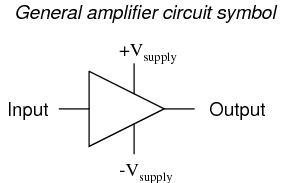
Las conexiones +V y -V indican los lados positivo y negativo de la fuente de alimentación de CC, respectivamente. Las conexiones de voltaje de entrada y salida se muestran como conductores únicos, porque se supone que todos los voltajes de señal están referenciados a una conexión común en el circuito llamadasuelo. A menudo (¡pero no siempre!), un polo de la fuente de alimentación de CC, ya sea positivo o negativo, es el punto de referencia a tierra. Un circuito amplificador práctico (que muestra la fuente de voltaje de entrada, la resistencia de carga y la fuente de alimentación) podría verse así:
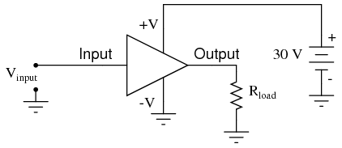
Sin tener que analizar el diseño real del transistor del amplificador, se puede discernir fácilmente la función de todo el circuito: tomar una señal de entrada (Vin), amplificarlo y accionar una resistencia de carga (Rcarga). Para completar el esquema anterior, sería bueno especificar las ganancias de ese amplificador (AV, AI, AP) y el punto Q (sesgo) para cualquier análisis matemático necesario.
Si es necesario que un amplificador pueda emitir voltaje CA verdadero (polaridad inversa) a la carga, se puede utilizar undividirSe puede utilizar una fuente de alimentación de CC, mediante la cual el punto de tierra está "centrado" eléctricamente entre +V y -V. A veces, la configuración de fuente de alimentación dividida se denominadualfuente de alimentación.
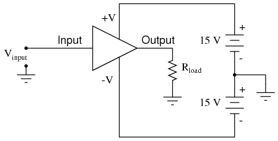
El amplificador todavía recibe 30 voltios en total, pero con la fuente de alimentación de CC de voltaje dividido, el voltaje de salida a través de la resistencia de carga ahora puede oscilar de un máximo teórico de +15 voltios a -15 voltios, en lugar de +30 voltios a 0 voltios. Esta es una manera fácil de obtener una verdadera salida de corriente alterna (CA) de un amplificador sin recurrir a un acoplamiento capacitivo o inductivo (transformador) en la salida. La amplitud pico a pico de la salida de este amplificador entre corte y saturación permanece sin cambios.
Al representar un amplificador de transistores dentro de un circuito más grande con un símbolo de triángulo, facilitamos la tarea de estudiar y analizar amplificadores y circuitos más complejos. Uno de estos tipos de amplificadores más complejos que estudiaremos se llamaamplificador diferencial. A diferencia de los amplificadores normales, que amplifican una única señal de entrada (a menudo llamadade un solo extremoamplificadores), los amplificadores diferenciales amplifican la diferencia de voltaje entre dos señales de entrada. Usando el símbolo del amplificador triangular simplificado, un amplificador diferencial se ve así:
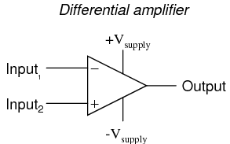
Los dos cables de entrada se pueden ver en el lado izquierdo del símbolo del amplificador triangular, el cable de salida en el lado derecho y los cables de alimentación +V y -V en la parte superior e inferior. Como en el otro ejemplo, todos los voltajes están referenciados al punto de tierra del circuito. Observe que un cable de entrada está marcado con un (-) y el otro está marcado con un (+). Debido a que un amplificador diferencial amplifica la diferencia de voltaje entre las dos entradas, cada entrada influye en el voltaje de salida de manera opuesta. Considere la siguiente tabla de voltajes de entrada/salida para un amplificador diferencial con una ganancia de voltaje de 4:
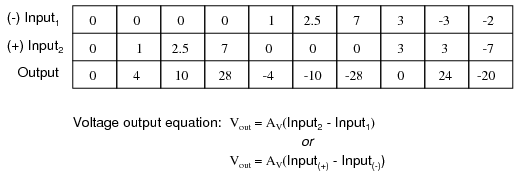
Un voltaje cada vez más positivo en la entrada (+) tiende a hacer que el voltaje de salida sea más positivo, y un voltaje cada vez más positivo en la entrada (-) tiende a hacer que el voltaje de salida sea más negativo. Del mismo modo, un voltaje cada vez más negativo en la entrada (+) tiende a hacer que la salida también sea negativa, y un voltaje cada vez más negativo en la entrada (-) hace justo lo contrario. Debido a esta relación entre entradas y polaridades, la entrada (-) se conoce comúnmente comoinvirtiendoentrada y el (+) comono inversoraporte.
Puede resultar útil pensar en un amplificador diferencial como una fuente de voltaje variable controlada por un voltímetro sensible, como tal:
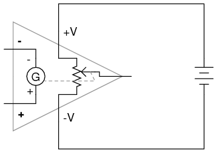
Tenga en cuenta que la ilustración anterior es sólo unamodelopara ayudar a comprender el comportamiento de un amplificador diferencial. No es un esquema realista de su diseño real. El símbolo "G" representa un galvanómetro, un movimiento voltímetro sensible. El potenciómetro conectado entre +V y -V proporciona un voltaje variable en el pin de salida (con referencia a un lado de la fuente de alimentación de CC), ese voltaje variable establecido por la lectura del galvanómetro. Debe entenderse que cualquier carga alimentada por la salida de un amplificador diferencial obtiene su corriente de la fuente de alimentación CC (batería),notla señal de entrada. La señal de entrada (al galvanómetro) simplementecontrolesla salida.
Al principio, este concepto puede resultar confuso para los estudiantes nuevos en el uso de amplificadores. Con todas estas polaridades y marcas de polaridad (- y +) alrededor, es fácil confundirse y no saber cuál será la salida de un amplificador diferencial. Para abordar esta posible confusión, he aquí una regla sencilla que debe recordar:
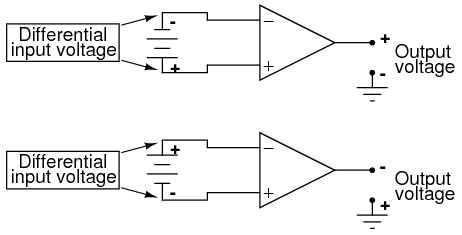
Cuando la polaridad deldiferencialSi el voltaje coincide con las marcas para entradas inversoras y no inversoras, la salida será positiva. Cuando la polaridad del voltaje diferencial choca con las marcas de entrada, la salida será negativa. Esto tiene cierta similitud con el signo matemático que muestran los voltímetros digitales según la polaridad del voltaje de entrada. El cable de prueba rojo del voltímetro (a menudo llamado cable "positivo" debido a la asociación popular del color rojo con el lado positivo de una fuente de alimentación en el cableado electrónico) es más positivo que el negro, el medidor mostrará una cifra de voltaje positivo y viceversa:
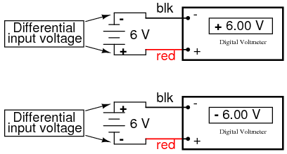
Así como un voltímetro solo mostrará el voltajeentreCon sus dos cables de prueba, un amplificador diferencial ideal solo amplifica la diferencia de potencial entre sus dos conexiones de entrada, no el voltaje entre cualquiera de esas conexiones y tierra. La polaridad de salida de un amplificador diferencial, al igual que la indicación con signo de un voltímetro digital, depende de las polaridades relativas del voltaje diferencial entre las dos conexiones de entrada.
Si los voltajes de entrada a este amplificador representaran cantidades matemáticas (como es el caso de los circuitos de computadora analógicos) o mediciones de procesos físicos (como es el caso de los circuitos de instrumentación electrónica analógica), se puede ver cómo un dispositivo como un amplificador diferencial podría ser muy útil. Podríamos usarlo para comparar dos cantidades y ver cuál es mayor (por la polaridad del voltaje de salida), o quizás podríamos comparar la diferencia entre dos cantidades (como el nivel de líquido en dos tanques) y activar una alarma (basada en el valor absoluto de la salida del amplificador) si la diferencia fuera demasiado grande. En los circuitos básicos de control automático, la cantidad que se controla (llamadavariable de proceso) se compara con un valor objetivo (llamadopunto de ajuste), y se toman decisiones sobre cómo actuar en función de la discrepancia entre estos dos valores. El primer paso para controlar electrónicamente un esquema de este tipo es amplificar la diferencia entre la variable del proceso y el punto de ajuste con un amplificador diferencial. En diseños de controladores simples, la salida de este amplificador diferencial se puede utilizar directamente para accionar el elemento de control final (como una válvula) y mantener el proceso razonablemente cerca del punto de ajuste.
- REVISAR:
- Un símbolo "taquigráfico" para un amplificador electrónico es un triángulo, el extremo ancho significa el lado de entrada y el extremo estrecho significa la salida. Las líneas de suministro de energía a menudo se omiten en el dibujo por simplicidad.
- Para facilitar la verdadera salida de CA de un amplificador, podemos usar lo que se llamadividir o dualfuente de alimentación, con dos fuentes de voltaje CC conectadas en serie con el punto medio conectado a tierra, dando un voltaje positivo a tierra (+V) y un voltaje negativo a tierra (-V). Las fuentes de alimentación divididas como esta se utilizan con frecuencia en circuitos amplificadores diferenciales.
- La mayoría de los amplificadores tienen una entrada y una salida.amplificadores diferencialestener dos entradas y una salida, siendo la señal de salida proporcional a la diferencia de señales entre las dos entradas.
- La salida de voltaje de un amplificador diferencial está determinada por la siguiente ecuación: Vout = AV(Vno inv - Vinv)
El amplificador operacional
Mucho antes de la llegada de la tecnología electrónica digital, las computadoras se construyeron para realizar cálculos electrónicamente empleando voltajes y corrientes para representar cantidades numéricas. Esto resultó especialmente útil para la simulación de procesos físicos. Un voltaje variable, por ejemplo, podría representar la velocidad o la fuerza en un sistema físico. Mediante el uso de divisores de voltaje resistivos y amplificadores de voltaje, las operaciones matemáticas de división y multiplicación podrían realizarse fácilmente en estas señales.
Las propiedades reactivas de condensadores e inductores se prestan bien a la simulación de variables relacionadas mediante funciones de cálculo. Recuerde cómo la corriente a través de un capacitor era función de la tasa de cambio del voltaje, y cómo esa tasa de cambio se designaba en cálculo como laderivado? Bueno, si el voltaje a través de un capacitor representara la velocidad de un objeto, la corriente a través del capacitor representaría la fuerza requerida para acelerar o desacelerar ese objeto, la capacitancia del capacitor representaría la masa del objeto:
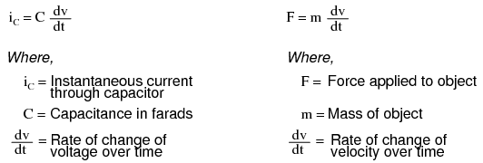
Este cálculo electrónico analógico de la función derivada del cálculo se conoce técnicamente comodiferenciación, y es una función natural de la corriente de un capacitor en relación con el voltaje aplicado a través de él. Tenga en cuenta que este circuito no requiere "programación" para realizar esta función matemática relativamente avanzada como lo haría una computadora digital.
Los circuitos electrónicos son muy fáciles y económicos de crear en comparación con los sistemas físicos complejos, por lo que este tipo de simulación electrónica analógica se utilizó ampliamente en la investigación y el desarrollo de sistemas mecánicos. Sin embargo, para una simulación realista, en estas primeras computadoras se necesitaban circuitos amplificadores de alta precisión y fácil configuración.
En el curso del diseño de computadoras analógicas se descubrió que los amplificadores diferenciales con ganancias de voltaje extremadamente altas cumplían estos requisitos de precisión y configurabilidad mejor que los amplificadores de un solo extremo con ganancias diseñadas a medida. Utilizando componentes simples conectados a las entradas y salidas del amplificador diferencial de alta ganancia, se podría obtener prácticamente cualquier ganancia y cualquier función del circuito, en general, sin ajustar ni modificar los circuitos internos del amplificador. Estos amplificadores diferenciales de alta ganancia llegaron a ser conocidos comoamplificadores operacionales, oamplificadores operacionales, debido a su aplicación en las matemáticas de las computadoras analógicas.operaciones.
Los amplificadores operacionales modernos, como el popular modelo 741, son circuitos integrados económicos y de alto rendimiento. Sus impedancias de entrada son bastante altas, las entradas consumen corrientes en el rango de medio microamperio (máximo) para el 741, y mucho menos para los amplificadores operacionales que utilizan transistores de entrada de efecto de campo. La impedancia de salida suele ser bastante baja, alrededor de 75 Ω para el modelo 741, y muchos modelos tienen protección contra cortocircuitos de salida incorporada, lo que significa que sus salidas pueden cortocircuitarse directamente a tierra sin causar daños a los circuitos internos. Con el acoplamiento directo entre las etapas de transistores internos de los amplificadores operacionales, pueden amplificar señales de CC tan bien como las de CA (hasta ciertos límites máximos de tiempo de aumento de voltaje). Costaría mucho más en dinero y tiempo diseñar un circuito amplificador de transistores discretos comparable que igualara ese tipo de rendimiento, a menos que se requiriera una capacidad de alta potencia. Por estas razones, los amplificadores operacionales tienen amplificadores de señal de transistores discretos casi obsoletos en muchas aplicaciones.
El siguiente diagrama muestra las conexiones de pines para amplificadores operacionales individuales (741 incluidos) cuando están alojados en un DIP de 8 pines (Dual Ien líneaPpaquete) circuito integrado:
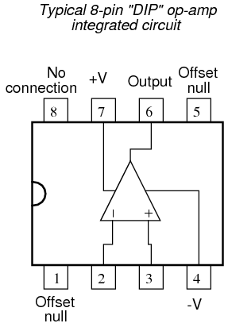
Algunos modelos de amplificador operacional vienen con dos en un paquete, incluidos los populares modelos TL082 y 1458. Se denominan unidades "duales" y normalmente también están alojadas en un paquete DIP de 8 pines, con las siguientes conexiones de pines:
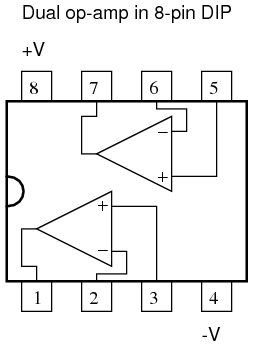
También hay disponibles cuatro amplificadores operacionales por paquete, normalmente en disposiciones DIP de 14 pines. Desafortunadamente, las asignaciones de pines no son tan estándar para estos amplificadores operacionales "cuádruples" como lo son para las unidades "duales" o simples. Consulte las hojas de datos del fabricante para obtener más detalles.
Las ganancias de voltaje de los amplificadores operacionales prácticos están en el rango de 200.000 o más, lo que los hace casi inútiles como amplificador diferencial analógico por sí solos. Para un amplificador operacional con una ganancia de voltaje (AV) de 200.000 y una oscilación máxima del voltaje de salida de +15 V/-15 V, todo lo que se necesitaría es un voltaje de entrada diferencial de 75 µV (microvoltios) para llevarlo a la saturación o al corte. Antes de ver cómo se utilizan los componentes externos para reducir la ganancia a un nivel razonable, investiguemos las aplicaciones para el amplificador operacional "básico" por sí solo.
Una aplicación se llamacomparador. Para todos los propósitos prácticos, podemos decir que la salida de un amplificador operacional estará saturada completamente positiva si la entrada (+) es más positiva que la entrada (-), y saturada completamente negativa si la entrada (+) es menos positiva que la entrada (-). En otras palabras, la ganancia de voltaje extremadamente alta de un amplificador operacional lo hace útil como dispositivo para comparar dos voltajes y cambiar los estados del voltaje de salida cuando una entrada excede a la otra en magnitud.
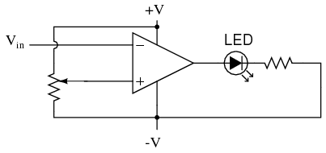
En el circuito anterior, tenemos un amplificador operacional conectado como comparador, comparando el voltaje de entrada con un voltaje de referencia establecido por el potenciómetro (R1). si vincae por debajo del voltaje establecido por R1, la salida del amplificador operacional se saturará a +V, iluminando así el LED. De lo contrario, si Vinestá por encima del voltaje de referencia, el LED permanecerá apagado. si vines una señal de voltaje producida por un instrumento de medición, este circuito comparador podría funcionar como una alarma "baja", con el punto de disparo establecido por R1. En lugar de un LED, la salida del amplificador operacional podría accionar un relé, un transistor, un SCR o cualquier otro dispositivo capaz de conmutar la alimentación a una carga, como una válvula solenoide, para que actúe en caso de una alarma baja.
Otra aplicación del circuito comparador que se muestra es un convertidor de onda cuadrada. Supongamos que el voltaje de entrada aplicado a la entrada inversora (-) fuera una onda sinusoidal de CA en lugar de un voltaje de CC estable. En ese caso, el voltaje de salida pasaría entre estados opuestos de saturación siempre que el voltaje de entrada fuera igual al voltaje de referencia producido por el potenciómetro. El resultado sería una onda cuadrada:
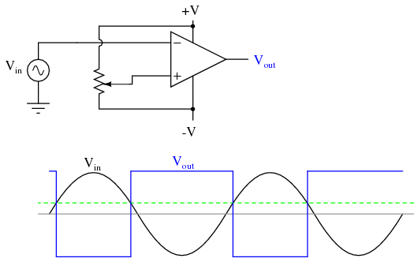
Los ajustes a la configuración del potenciómetro cambiarían el voltaje de referencia aplicado a la entrada no inversora (+), lo que cambiaría los puntos en los que se cruzaría la onda sinusoidal, cambiando los tiempos de encendido/apagado, ociclo de trabajode la onda cuadrada:
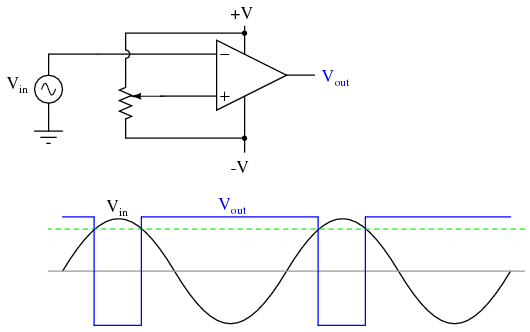
Debería ser evidente que el voltaje de entrada de CA no tendría que ser una onda sinusoidal en particular para que este circuito realice la misma función. El voltaje de entrada podría ser una onda triangular, una onda en diente de sierra o cualquier otro tipo de onda que pase suavemente de positivo a negativo y nuevamente a positivo. Este tipo de circuito comparador es muy útil para crear ondas cuadradas con ciclos de trabajo variables. Esta técnica a veces se denominamodulación de ancho de pulso, o PWM (variante, omodulandouna forma de onda según una señal de control, en este caso la señal producida por el potenciómetro).
Otra aplicación de comparación es la del controlador de gráfico de barras. Si tuviéramos varios amplificadores operacionales conectados como comparadores, cada uno con su propio voltaje de referencia conectado a la entrada inversora, pero cada uno monitoreando la misma señal de voltaje en sus entradas no inversoras, podríamos construir un medidor estilo gráfico de barras como el que se ve comúnmente en los sintonizadores estéreo y ecualizadores gráficos. A medida que aumentaba el voltaje de la señal (que representa la intensidad de la señal de radio o el nivel de sonido de audio), cada comparador se "encendía" en secuencia y enviaba energía a su LED respectivo. Con cada comparador encendiéndose a un nivel diferente de sonido de audio, el número de LED iluminados indicaría qué tan fuerte era la señal.
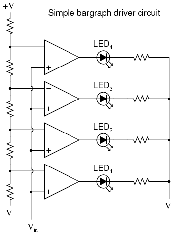
En el circuito que se muestra arriba, LED1sería el primero en encenderse a medida que el voltaje de entrada aumentara en una dirección positiva. A medida que el voltaje de entrada seguía aumentando, los otros LED se iluminaban sucesivamente, hasta que todos estuvieran encendidos.
Esta misma tecnología se utiliza en algunos convertidores de señal analógico a digital, concretamente elconvertidor flash, para traducir una cantidad de señal analógica en una serie de voltajes de encendido/apagado que representan un número digital.
- REVISAR:
- La forma de un triángulo es el símbolo genérico de un circuito amplificador; el extremo ancho significa la entrada y el extremo estrecho significa la salida.
- A menos que se especifique lo contrario,allLos voltajes en los circuitos amplificadores están referenciados a un común.suelopunto, generalmente conectado a un terminal de la fuente de alimentación. De esta manera, podemos hablar de una cierta cantidad de voltaje "en" un solo cable, al mismo tiempo que nos damos cuenta de que el voltaje essiempremedido entre dos puntos.
- A amplificador diferenciales uno que amplifica el voltajediferenciaentre dos entradas de señal. En tal circuito, una entrada tiende a llevar el voltaje de salida a la misma polaridad de la señal de entrada, mientras que la otra entrada hace justo lo contrario. En consecuencia, la primera entrada se llamano inversor(+) entrada y la segunda se llamainvirtiendo(-) aporte.
- An amplificador operacional (o amplificador operacionalpara abreviar) es un amplificador diferencial con una ganancia de voltaje extremadamente alta (AV= 200.000 o más). Su nombre proviene de su uso original en circuitos informáticos analógicos (realización de operaciones matemáticas).operaciones).
- Los amplificadores operacionales suelen tener impedancias de entrada muy altas e impedancias de salida bastante bajas.
- A veces los amplificadores operacionales se utilizan como señal.comparadores, funcionando en modo de corte total o saturación dependiendo de qué entrada (invertida o no inversora) tenga el mayor voltaje. Los comparadores son útiles para detectar condiciones de señal "mayores que" (comparando una con otra).
- Una aplicación de comparación se llamamodulador de ancho de pulso, y se obtiene comparando una señal de CA de onda sinusoidal con un voltaje de referencia de CC. A medida que se ajusta el voltaje de referencia de CC, la salida de onda cuadrada del comparador cambia su ciclo de trabajo (tiempos positivos versus negativos). Por lo tanto, los controles de voltaje de referencia de CC, omodulael ancho de pulso del voltaje de salida.
Negative feedback
Si conectamos la salida de un amplificador operacional a su entrada inversora y aplicamos una señal de voltaje a la entrada no inversora, encontramos que el voltaje de salida del amplificador operacional sigue de cerca ese voltaje de entrada (he olvidado dibujar la fuente de alimentación, los cables +V/-V y el símbolo de tierra para simplificar):
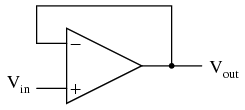
como vinaumenta, Voutaumentará de acuerdo con la ganancia diferencial. Sin embargo, como Voutaumenta, ese voltaje de salida se retroalimenta a la entrada inversora, actuando así para disminuir el diferencial de voltaje entre las entradas, lo que actúa para reducir la salida. Lo que sucederá para cualquier entrada de voltaje dada es que el amplificador operacional generará un voltaje casi igual a Vin, pero lo suficientemente bajo como para que quede suficiente diferencia de voltaje entre Viny la entrada (-) a amplificar para generar el voltaje de salida.
El circuito alcanzará rápidamente un punto de estabilidad (conocido comoequilibrioen física), donde el voltaje de salida es la cantidad justa para mantener la cantidad correcta de diferencial, lo que a su vez produce la cantidad correcta de voltaje de salida. Tomar el voltaje de salida del amplificador operacional y acoplarlo a la entrada inversora es una técnica conocida comoretroalimentación negativa, y es la clave para tener un sistema autoestabilizador (esto es cierto no solo para los amplificadores operacionales, sino para cualquier sistema dinámico en general). Esta estabilidad le da al amplificador operacional la capacidad de trabajar en su modo lineal (activo), en lugar de simplemente estar saturado completamente "encendido" o "apagado" como estaba cuando se usaba como comparador, sin retroalimentación alguna.
Debido a que la ganancia del amplificador operacional es tan alta, el voltaje en la entrada inversora se puede mantener casi igual a Vin. Digamos que nuestro amplificador operacional tiene una ganancia de voltaje diferencial de 200.000. si vines igual a 6 voltios, el voltaje de salida será 5.999970000149999 voltios. Esto crea suficiente voltaje diferencial (6 voltios - 5,999970000149999 voltios = 29,99985 µV) para causar que 5,999970000149999 voltios se manifiesten en el terminal de salida, y el sistema se mantiene allí en equilibrio. Como puede ver, 29,99985 µV no es mucho diferencial, por lo que para cálculos prácticos, podemos suponer que el voltaje diferencial entre los dos cables de entrada se mantiene mediante retroalimentación negativa exactamente en 0 voltios.
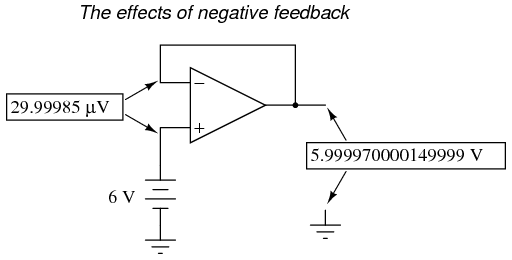
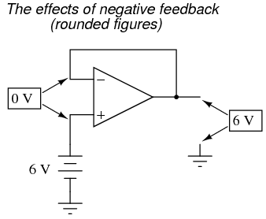
Una gran ventaja de utilizar un amplificador operacional con retroalimentación negativa es que la ganancia de voltaje real del amplificador operacional no importa, siempre que sea muy grande. Si la ganancia diferencial del amplificador operacional fuera 250.000 en lugar de 200.000, todo lo que significaría es que el voltaje de salida se mantendría un poco más cerca de Vin(se necesita menos voltaje diferencial entre las entradas para generar la salida requerida). En el circuito que se acaba de ilustrar, el voltaje de salida seguiría siendo (a todos los efectos prácticos) igual al voltaje de entrada no inversor. Por lo tanto, las ganancias del amplificador operacional no tienen que ser establecidas con precisión en fábrica para que el diseñador del circuito construya un circuito amplificador con ganancia precisa. La retroalimentación negativa hace que el sistema se autocorrija. El circuito anterior en su conjunto simplemente seguirá el voltaje de entrada con una ganancia estable de 1.
Volviendo a nuestro modelo de amplificador diferencial, podemos pensar en el amplificador operacional como una fuente de voltaje variable controlada por un sensor extremadamente sensible.detector nulo, el tipo de movimiento del medidor u otro dispositivo de medición sensible utilizado en circuitos puente para detectar una condición de equilibrio (cero voltios). El "potenciómetro" dentro del amplificador operacional que crea el voltaje variable se moverá a cualquier posición necesaria para "equilibrar" los voltajes de entrada inversor y no inversor de modo que el "detector nulo" tenga voltaje cero:
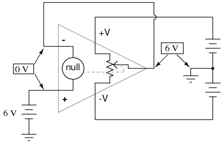
A medida que el "potenciómetro" se moverá para proporcionar un voltaje de salida necesario para satisfacer el "detector nulo" ante una "indicación" de cero voltios, el voltaje de salida se vuelve igual al voltaje de entrada: en este caso, 6 voltios. Si el voltaje de entrada cambia, el "potenciómetro" dentro del amplificador operacional cambiará de posición para mantener el "detector nulo" en equilibrio (lo que indica cero voltios), lo que resultará en un voltaje de salida aproximadamente igual al voltaje de entrada en todo momento.
Esto será válido dentro del rango de voltajes que el amplificador operacional puede generar. Con una fuente de alimentación de +15 V/-15 V y un amplificador ideal que puede variar su voltaje de salida en la misma medida, "seguirá" fielmente el voltaje de entrada entre los límites de +15 voltios y -15 voltios. Por esta razón, el circuito anterior se conoce comoseguidor de voltaje. Al igual que su contraparte de un transistor, el amplificador de colector común ("seguidor de emisor"), tiene una ganancia de voltaje de 1, una impedancia de entrada alta, una impedancia de salida baja y una ganancia de corriente alta. Los seguidores de voltaje también se conocen comoamortiguadores de voltaje, y se utilizan para aumentar la capacidad de fuente de corriente de señales de voltaje demasiado débiles (impedancia de fuente demasiado alta) para impulsar directamente una carga. El modelo de amplificador operacional que se muestra en la última ilustración muestra cómo el voltaje de salida está esencialmente aislado del voltaje de entrada, de modo que la corriente en el pin de salida no es suministrada por la fuente de voltaje de entrada, sino más bien por la fuente de alimentación que alimenta el amplificador operacional.
Cabe mencionar que muchos amplificadores operacionales no pueden cambiar sus voltajes de salida exactamente a voltajes del riel de fuente de alimentación de +V/-V. El modelo 741 es uno de los que no pueden hacerlo: cuando está saturado, su voltaje de salida alcanza un máximo dentro de aproximadamente un voltio del voltaje de la fuente de alimentación +V y dentro de aproximadamente 2 voltios del voltaje de la fuente de alimentación -V. Por lo tanto, con una fuente de alimentación dividida de +15/-15 voltios, la salida de un amplificador operacional 741 puede llegar hasta +14 voltios o tan bajo como -13 voltios (aproximadamente), pero no más. Esto se debe a su diseño de transistor bipolar. Estos dos límites de voltaje se conocen comovoltaje de saturación positivo y voltaje de saturación negativo, respectivamente. Otros amplificadores operacionales, como el modelo 3130 con transistores de efecto de campo en la etapa de salida final, tienen la capacidad de variar sus voltajes de salida dentro de milivoltios de cualquiera de las fuentes de alimentación.carrilVoltaje. En consecuencia, sus tensiones de saturación positivas y negativas son prácticamente iguales a las tensiones de alimentación.
- REVISAR:
- Conectar la salida de un amplificador operacional a su entrada inversora (-) se llamaretroalimentación negativa. Este término se puede aplicar ampliamente a cualquier sistema dinámico en el que la señal de salida se "realimenta" a la entrada de alguna manera para alcanzar un punto de equilibrio.
- Cuando la salida de un amplificador operacional esdirectamenteconectado a su entrada inversora (-), unseguidor de voltajeserá creado. Cualquier voltaje de señal que se imprima en la entrada no inversora (+) se verá en la salida.
- Un amplificador operacional con retroalimentación negativa intentará llevar su voltaje de salida a cualquier nivel necesario para que el voltaje diferencial entre las dos entradas sea prácticamente cero. Cuanto mayor sea la ganancia diferencial del amplificador operacional, más cerca estará el voltaje diferencial de cero.
- Algunos amplificadores operacionales no pueden producir un voltaje de salida igual a su voltaje de suministro cuando están saturados. El modelo 741 es uno de ellos. Los límites superior e inferior de la oscilación del voltaje de salida de un amplificador operacional se conocen comovoltaje de saturación positivo y voltaje de saturación negativo, respectivamente.
Divided feedback
Si agregamos un divisor de voltaje al cableado de retroalimentación negativa de modo que solo unfraccióndel voltaje de salida se devuelve a la entrada inversora en lugar de la cantidad total, el voltaje de salida será unmúltipledel voltaje de entrada (tenga en cuenta que las conexiones de la fuente de alimentación al amplificador operacional se han omitido una vez más por razones de simplicidad):
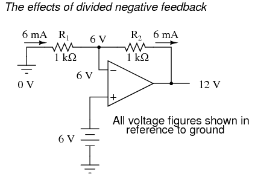
Si R1y r2son ambos iguales y Vines de 6 voltios, el amplificador operacional generará cualquier voltaje necesario para caer 6 voltios en R1(para hacer que el voltaje de entrada inversora también sea igual a 6 voltios, manteniendo la diferencia de voltaje entre las dos entradas igual a cero). Con el divisor de voltaje 2:1 de R1y r2, esto requerirá 12 voltios en la salida del amplificador operacional para lograrlo.
Otra forma de analizar este circuito es comenzar calculando la magnitud y dirección de la corriente a través de R1, conociendo el voltaje en cada lado (y por lo tanto, por resta, el voltaje en R1), y R1La resistencia. Desde el lado izquierdo de R1está conectado a tierra (0 voltios) y el lado derecho tiene un potencial de 6 voltios (debido a la retroalimentación negativa que mantiene ese punto igual a Vin), podemos ver que tenemos 6 voltios en R1. Esto nos da 6 mA de corriente a través de R1de izquierda a derecha. Como sabemos que ambas entradas del amplificador operacional tienen una impedancia extremadamente alta, podemos asumir con seguridad que no sumarán ni restarán corriente a través del divisor. En otras palabras, podemos tratar R1y r2como si estuvieran en serie entre sí: todos los electrones que fluyen a través de R1debe fluir a través de R2. Conociendo la corriente a través de R2y la resistencia de R2, podemos calcular el voltaje en R2(6 voltios) y su polaridad. Contando voltajes desde tierra (0 voltios) hasta el lado derecho de R2, llegamos a 12 voltios en la salida.
Al examinar la última ilustración, uno podría preguntarse: "¿a dónde van esos 6 mA de corriente?" La última ilustración no muestra el recorrido completo de la corriente, pero en realidad proviene del lado negativo de la fuente de alimentación CC, a través de tierra, a través de R.1, a través de R2, a través del pin de salida del amplificador operacional, y luego de regreso al lado positivo de la fuente de alimentación de CC a través del (los) transistor(es) de salida del amplificador operacional. Usando el modelo de detector nulo/potenciómetro del amplificador operacional, la ruta de corriente se ve así:
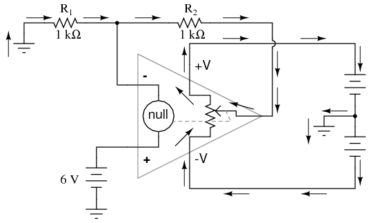
La fuente de señal de 6 voltios no tiene que suministrar corriente para el circuito: simplemente ordena al amplificador operacional que equilibre el voltaje entre los pines de entrada inversor (-) y no inversor (+) y, al hacerlo, produce un voltaje de salida que es el doble de la entrada debido al efecto divisor de las dos resistencias de 1 kΩ.
Podemos cambiar la ganancia de voltaje de este circuito, en general, simplemente ajustando los valores de R1y r2(cambiando la relación del voltaje de salida que se retroalimenta a la entrada inversora). La ganancia se puede calcular mediante la siguiente fórmula:
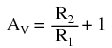
Tenga en cuenta que la ganancia de voltaje para este diseño de circuito amplificador nunca puede ser menor que 1. Si reducimos R2a un valor de cero ohmios, nuestro circuito sería esencialmente idéntico al seguidor de voltaje, con la salida directamente conectada a la entrada inversora. Dado que el seguidor de voltaje tiene una ganancia de 1, esto establece el límite inferior de ganancia del amplificador no inversor. Sin embargo, la ganancia se puede aumentar mucho más allá de 1, aumentando R2en proporción a R1.
También tenga en cuenta que la polaridad de la salida coincide con la de la entrada, al igual que con un seguidor de voltaje. Un voltaje de entrada positivo da como resultado un voltaje de salida positivo y viceversa (con respecto a tierra). Por esta razón, a este circuito se le conoce comoamplificador no inversor.
Al igual que con el seguidor de voltaje, vemos que la ganancia diferencial del amplificador operacional es irrelevante, siempre que sea muy alta. Los voltajes y corrientes en este circuito difícilmente cambiarían si la ganancia de voltaje del amplificador operacional fuera 250.000 en lugar de 200.000. Esto representa un marcado contraste con los diseños de circuitos de amplificadores de un solo transistor, donde la Beta del transistor individual influyó en gran medida en las ganancias generales del amplificador. Con retroalimentación negativa, tenemos un sistema de autocorrección que amplifica el voltaje de acuerdo con las relaciones establecidas por las resistencias de retroalimentación, no con las ganancias internas del amplificador operacional.
Veamos qué sucede si retenemos retroalimentación negativa a través de un divisor de voltaje, pero aplicamos el voltaje de entrada en una ubicación diferente:
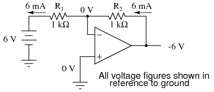
Al conectar a tierra la entrada no inversora, la retroalimentación negativa de la salida también busca mantener el voltaje de la entrada inversora en 0 voltios. Por esta razón, en este circuito se hace referencia a la entrada inversora comoterreno virtual, manteniéndose al potencial de tierra (0 voltios) por la retroalimentación, pero no conectado directamente a (eléctricamente común con) tierra. El voltaje de entrada esta vez se aplica al extremo izquierdo del divisor de voltaje (R1 = R2= 1 kΩ nuevamente), por lo que el voltaje de salida debe oscilar a -6 voltios para equilibrar el potencial medio en tierra (0 voltios). Usando las mismas técnicas que con el amplificador no inversor, podemos analizar el funcionamiento de este circuito determinando las magnitudes y direcciones de las corrientes, comenzando con R1y continúa con la determinación del voltaje de salida.
Podemos cambiar la ganancia de voltaje general de este circuito, en general, simplemente ajustando los valores de R1y r2(cambiando la relación del voltaje de salida que se retroalimenta a la entrada inversora). La ganancia se puede calcular mediante la siguiente fórmula:
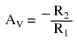
Tenga en cuenta que la ganancia de voltaje de este circuitocanser menor que 1, dependiendo únicamente de la relación de R2a r1. También tenga en cuenta que el voltaje de salida es siempre la polaridad opuesta al voltaje de entrada. Un voltaje de entrada positivo da como resultado un voltaje de salida negativo y viceversa (con respecto a tierra). Por esta razón, a este circuito se le conoce comoamplificador inversor. A veces, la fórmula de ganancia contiene un signo negativo (antes de la R2/R1fracción) para reflejar esta inversión de polaridades.
Estos dos circuitos amplificadores que acabamos de investigar sirven para multiplicar o dividir la magnitud de la señal de voltaje de entrada. Así es exactamente como se manejan normalmente las operaciones matemáticas de multiplicación y división en los circuitos de computadora analógicos.
- REVISAR:
- Al conectar la entrada inversora (-) de un amplificador operacional directamente a la salida, obtenemos retroalimentación negativa, lo que nos da unaseguidor de voltajecircuito. Al conectar esa retroalimentación negativa a través de un divisor de voltaje resistivo (realimentando unfraccióndel voltaje de salida a la entrada inversora), el voltaje de salida se convierte en unmúltipledel voltaje de entrada.
- Un circuito amplificador operacional de retroalimentación negativa con la señal de entrada yendo a la entrada no inversora (+) se llamaamplificador no inversor. El voltaje de salida tendrá la misma polaridad que el de entrada. La ganancia de voltaje viene dada por la siguiente ecuación: AV= (R2/R1) + 1
- Un circuito amplificador operacional de retroalimentación negativa con la señal de entrada yendo al "fondo" del divisor de voltaje resistivo, con la entrada no inversora (+) conectada a tierra, se llamaamplificador inversor. Su voltaje de salida será la polaridad opuesta a la de entrada. La ganancia de voltaje viene dada por la siguiente ecuación: AV= -R2/R1
Una analogía para la realimentación dividida
Una analogía útil para comprender los circuitos amplificadores de retroalimentación dividida es la de una palanca mecánica, en la que el movimiento relativo de los extremos de la palanca representa el cambio en los voltajes de entrada y salida, y el fulcro (punto de pivote) representa la ubicación del punto de tierra, real o virtual.
Tomemos, por ejemplo, el siguiente circuito de amplificador operacional no inversor. Sabemos por la sección anterior que la ganancia de voltaje de una configuración de amplificador no inversor nunca puede ser menor que la unidad (1). Si dibujamos un diagrama de palanca al lado del esquema del amplificador, con la distancia entre el punto de apoyo y los extremos de la palanca representativos de los valores de resistencia, el movimiento de la palanca significará cambios en el voltaje en los terminales de entrada y salida del amplificador:
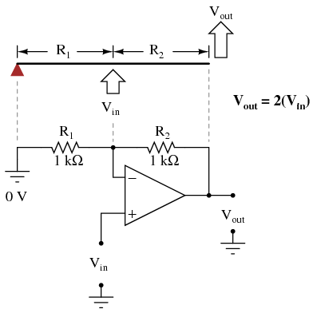
Los físicos llaman a este tipo de palanca, con la fuerza de entrada (esfuerzo) aplicada entre el punto de apoyo y la salida (carga), unatercera clasepalanca. Se caracteriza por un desplazamiento (movimiento) de salida al menos tan grande como el desplazamiento de entrada (una "ganancia" de al menos 1) y en la misma dirección. Aplicar un voltaje de entrada positivo a este circuito de amplificador operacional es análogo a desplazar el punto de "entrada" de la palanca hacia arriba:
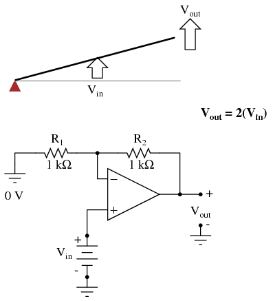
Debido a las características de amplificación del desplazamiento de la palanca, el punto de "salida" se moverá el doble que el punto de "entrada" y en la misma dirección. En el circuito electrónico, el voltaje de salida será igual al doble del de entrada, con la misma polaridad. Aplicar un voltaje de entrada negativo es análogo a mover la palanca hacia abajo desde su posición de nivel "cero", lo que resulta en un desplazamiento de salida amplificado que también es negativo:
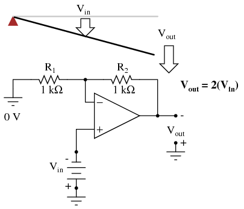
Si alteramos la relación de resistencia R2/R1, cambiamos la ganancia del circuito del amplificador operacional. En términos de palanca, esto significa mover el punto de entrada en relación con el punto de apoyo y el extremo de la palanca, lo que de manera similar cambia la "ganancia" de desplazamiento de la máquina:
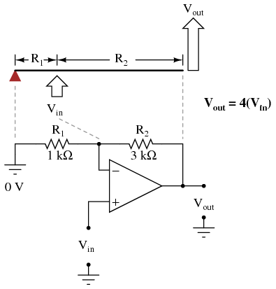
Ahora, cualquier señal de entrada se amplificará en un factor de cuatro en lugar de en un factor de dos:
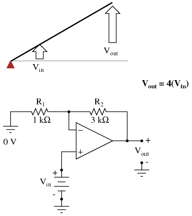
Los circuitos de amplificador operacional inversor también se pueden modelar utilizando la analogía de la palanca. Con la configuración inversora, el punto de tierra del divisor de voltaje de retroalimentación es la entrada inversora del amplificador operacional con la entrada a la izquierda y la salida a la derecha. Esto es mecánicamente equivalente a unprimera clasepalanca, donde la fuerza de entrada (esfuerzo) está en el lado opuesto del fulcro de la salida (carga):
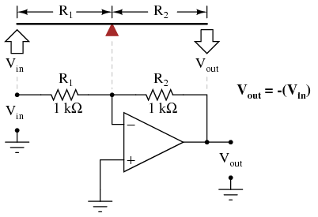
Con resistencias de igual valor (palancas de igual longitud a cada lado del fulcro), el voltaje de salida (desplazamiento) será igual en magnitud al voltaje de entrada (desplazamiento), pero de polaridad opuesta (dirección). Una entrada positiva da como resultado una salida negativa:
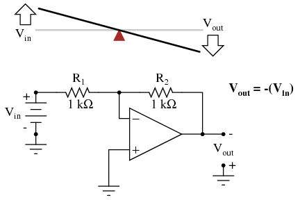
Cambiar la relación de resistencia R2/R1cambia la ganancia del circuito amplificador, del mismo modo que cambiar la posición del fulcro en la palanca cambia su "ganancia" de desplazamiento mecánico. Considere el siguiente ejemplo, donde R2se hace dos veces más grande que R1:
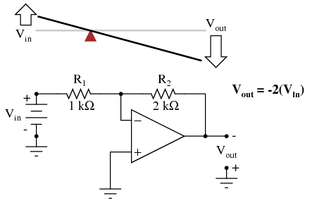
Sin embargo, con la configuración del amplificador inversor son posibles ganancias inferiores a 1, al igual que con las palancas de primera clase. R reversible2y r1valores es análogo a mover el punto de apoyo a su posición complementaria en la palanca: un tercio del camino desde el extremo de salida. Allí, el desplazamiento de salida será la mitad del desplazamiento de entrada:
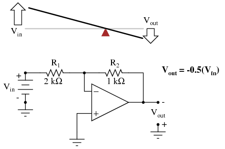
Conversión de señal de tensión a corriente
En los circuitos de instrumentación, las señales de CC se utilizan a menudo como representaciones analógicas de mediciones físicas como temperatura, presión, flujo, peso y movimiento. Más comúnmente,corriente continuaLas señales se utilizan con preferencia avoltaje CCseñales, porque las señales de corriente son exactamente iguales en magnitud a lo largo del circuito en serie que transporta corriente desde la fuente (dispositivo de medición) a la carga (indicador, registrador o controlador), mientras que las señales de voltaje en un circuito paralelo pueden variar de un extremo al otro debido a pérdidas resistivas en los cables. Además, los instrumentos de detección de corriente suelen tener impedancias bajas (mientras que los instrumentos de detección de voltaje tienen impedancias altas), lo que les da a los instrumentos de detección de corriente una mayor inmunidad al ruido eléctrico.
Para utilizar la corriente como representación analógica de una cantidad física, debemos tener alguna forma de generar una cantidad precisa de corriente dentro del circuito de señal. Pero, ¿cómo generamos una señal de corriente precisa cuando es posible que no conozcamos la resistencia del bucle? La respuesta es utilizar un amplificador diseñado para mantener la corriente en un valor prescrito, aplicando tanto o tan poco voltaje como sea necesario al circuito de carga para mantener ese valor. Un amplificador de este tipo cumple la función de unfuente de corriente. Un amplificador operacional con retroalimentación negativa es un candidato perfecto para tal tarea:
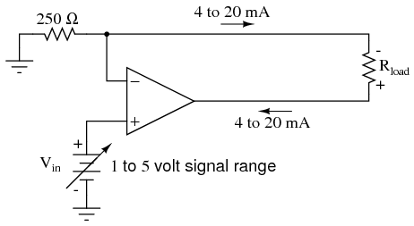
Se supone que el voltaje de entrada a este circuito proviene de algún tipo de disposición física de transductor/amplificador, calibrado para producir 1 voltio al 0 por ciento de la medición física y 5 voltios al 100 por ciento de la medición física. El rango de señal de corriente analógica estándar es de 4 mA a 20 mA, lo que significa del 0 % al 100 % del rango de medición, respectivamente. Con una entrada de 5 voltios, a la resistencia de 250 Ω (precisión) se le aplicarán 5 voltios, lo que dará como resultado 20 mA de corriente en el circuito de bucle grande (con Rcarga). No importa qué valor de resistencia Rcargaes, o cuánta resistencia del cable está presente en ese bucle grande, siempre que el amplificador operacional tenga un voltaje de fuente de alimentación lo suficientemente alto como para generar el voltaje necesario para que fluyan 20 mA a través de Rcarga. La resistencia de 250 Ω establece la relación entre el voltaje de entrada y la corriente de salida, creando en este caso la equivalencia de 1-5 V de entrada / 4-20 mA de salida. Si estuviéramos convirtiendo la señal de entrada de 1 a 5 voltios en una señal de salida de 10 a 50 mA (un estándar de instrumentación más antiguo y obsoleto para la industria), usaríamos una resistencia de precisión de 100 Ω en su lugar.
Otro nombre para este circuito esamplificador de transconductancia. En electrónica, la transconductancia es la relación matemática del cambio de corriente dividida por el cambio de voltaje (ΔI / Δ V), y se mide en la unidad Siemens, la misma unidad utilizada para expresar la conductancia (el recíproco matemático de la resistencia: corriente/voltaje). En este circuito, la relación de transconductancia está fijada por el valor de la resistencia de 250 Ω, dando una relación lineal de salida de corriente/entrada de voltaje.
- REVISAR:
- En la industria, las señales de corriente CC se utilizan a menudo con preferencia a las señales de voltaje CC como representaciones analógicas de cantidades físicas. La corriente en un circuito en serie es absolutamente igual en todos los puntos de ese circuito, independientemente de la resistencia del cableado, mientras que el voltaje en un circuito conectado en paralelo puede variar de un extremo a otro debido a la resistencia del cable, lo que hace que la señalización de corriente sea más precisa desde el instrumento "transmisor" al "receptor".
- Las señales de voltaje son relativamente fáciles de producir directamente desde dispositivos transductores, mientras que las señales de corriente precisas no lo son. Los amplificadores operacionales se pueden utilizar para "convertir" una señal de voltaje en una señal de corriente con bastante facilidad. En este modo, el amplificador operacional generará cualquier voltaje necesario para mantener la corriente a través del circuito de señalización en el valor adecuado.
Circuitos promediadores y sumadores
Si tomamos tres resistencias iguales y conectamos un extremo de cada una a un punto común, luego aplicamos tres voltajes de entrada (uno a cada uno de los extremos libres de las resistencias), el voltaje visto en el punto común será el matemáticopromediode los tres.
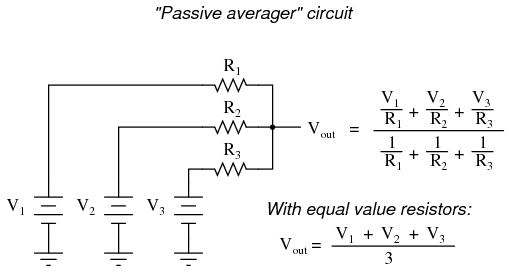
Este circuito en realidad no es más que una aplicación práctica del Teorema de Millman:
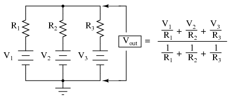
Este circuito se conoce comúnmente comopromedio pasivo, porque genera un voltaje promedio con componentes no amplificadores.Pasivosimplemente significa que es un circuito no amplificado. La ecuación grande a la derecha del circuito promediador proviene del teorema de Millman, que describe el voltaje producido por múltiples fuentes de voltaje conectadas entre sí a través de resistencias individuales. Dado que las tres resistencias en el circuito promediador son iguales entre sí, podemos simplificar la fórmula de Millman escribiendo R1, R2y R3simplemente como R (una resistencia igual en lugar de tres resistencias individuales):
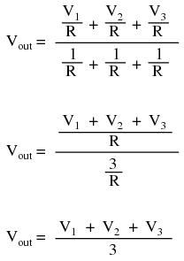
Si tomamos un promediador pasivo y lo usamos para conectar tres voltajes de entrada en un circuito amplificador de amplificador operacional con una ganancia de 3, podemos convertir estopromediandofuncionar en unsumafunción. El resultado se llamaverano no inversorcircuito:
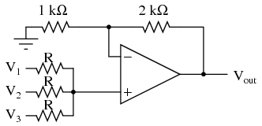
Con un divisor de voltaje compuesto por una combinación de 2 kΩ / 1 kΩ, el circuito amplificador no inversor tendrá una ganancia de voltaje de 3. Tomando el voltaje del promediador pasivo, que es la suma de V1, V2y V3dividido por 3, y multiplicando ese promedio por 3, llegamos a un voltaje de salida igual alsumde V1, V2y V3:
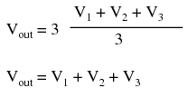
Se puede hacer lo mismo con un amplificador operacional inversor, utilizando un promediador pasivo como parte del circuito de retroalimentación del divisor de voltaje. El resultado se llamaverano invertidocircuito:
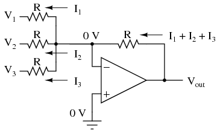
Ahora, con los lados derechos de las tres resistencias promedio conectadas al punto de tierra virtual de la entrada inversora del amplificador operacional, el teorema de Millman ya no se aplica directamente como antes. El voltaje en la tierra virtual ahora se mantiene en 0 voltios gracias a la retroalimentación negativa del amplificador operacional, mientras que antes podía flotar libremente hasta el valor promedio de V.1, V2y V3. Sin embargo, con todos los valores de resistencia iguales entre sí, las corrientes a través de cada una de las tres resistencias serán proporcionales a sus respectivos voltajes de entrada. Dado que esas tres corrientesadden el nodo de tierra virtual, la suma algebraica de esas corrientes a través de la resistencia de retroalimentación producirá un voltaje en Voutigual a V1 + V2 + V3, excepto con polaridad invertida. La inversión de polaridad es lo que hace que este circuito sea uninvirtiendoverano:
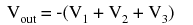
Los circuitos sumadores (sumadores) son bastante útiles en el diseño de computadoras analógicas, tal como lo serían los circuitos multiplicadores y divisores. Nuevamente, es la ganancia diferencial extremadamente alta del amplificador operacional la que nos permite construir estos útiles circuitos con un mínimo de componentes.
- REVISAR:
- A veranocircuito es aquel quesumas, o suma, varias señales de voltaje analógicas juntas. Hay dos variedades básicas de circuitos de verano con amplificadores operacionales: inversores y no inversores.
Building a differential amplifier
Un amplificador operacional sin retroalimentación ya es un amplificador diferencial que amplifica la diferencia de voltaje entre las dos entradas. Sin embargo, su ganancia no se puede controlar y, en general, es demasiado alta para tener alguna utilidad práctica. Hasta ahora, nuestra aplicación de retroalimentación negativa a los amplificadores operacionales ha resultado en la pérdida práctica de una de las entradas, el amplificador resultante solo sirve para amplificar una entrada de señal de voltaje único. Sin embargo, con un poco de ingenio, podemos construir un circuito de amplificador operacional que mantenga ambas entradas de voltaje, pero con una ganancia controlada establecida por resistencias externas.
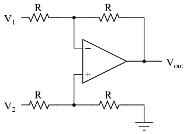
Si todos los valores de resistencia son iguales, este amplificador tendrá una ganancia de voltaje diferencial de 1. El análisis de este circuito es esencialmente el mismo que el de un amplificador inversor, excepto que la entrada no inversora (+) del amplificador operacional está a un voltaje igual a una fracción de V.2, en lugar de estar conectado directamente a tierra. Como sería lógico, V2funciona como entrada no inversora y V1Funciona como entrada inversora del circuito amplificador final. Por lo tanto:
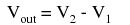
Si quisiéramos proporcionar una ganancia diferencial distinta de 1, tendríamos que ajustar las resistencias enambosdivisores de voltaje superior e inferior, lo que requiere múltiples cambios de resistencia y equilibrio entre los dos divisores para un funcionamiento simétrico. Esto no siempre es práctico, por razones obvias.
Otra limitación del diseño de este amplificador es el hecho de que sus impedancias de entrada son bastante bajas en comparación con las de otras configuraciones de amplificadores operacionales, en particular el amplificador no inversor (entrada de un solo extremo). Cada fuente de voltaje de entrada tiene que conducir corriente a través de una resistencia, que constituye mucha menos impedancia que la entrada desnuda de un amplificador operacional por sí sola. La solución a este problema, afortunadamente, es bastante sencilla. Todo lo que necesitamos hacer es "amortiguar" cada señal de voltaje de entrada a través de un seguidor de voltaje como este:
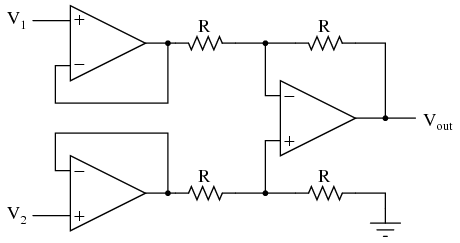
Ahora la V1y v2Las líneas de entrada están conectadas directamente a las entradas de dos amplificadores operacionales seguidores de voltaje, lo que proporciona una impedancia muy alta. Los dos amplificadores operacionales de la izquierda ahora manejan la conducción de corriente a través de las resistencias en lugar de dejar que las fuentes de voltaje de entrada (cualesquiera que sean) lo hagan. La mayor complejidad de nuestro circuito es mínima para obtener un beneficio sustancial.
El amplificador de instrumentación
Como se sugirió anteriormente, es beneficioso poder ajustar la ganancia del circuito amplificador sin tener que cambiar más de un valor de resistencia, como era necesario con el diseño anterior de amplificador diferencial. el llamadoinstrumentaciónse basa en la última versión del amplificador diferencial para brindarnos esa capacidad:
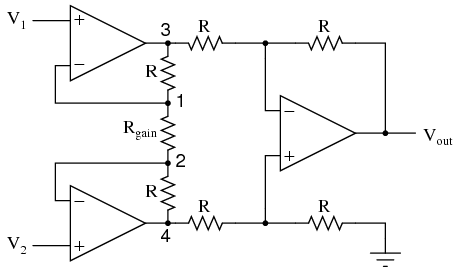
Este circuito intimidante está construido a partir de una etapa de amplificador diferencial amortiguado con tres nuevas resistencias que unen los dos circuitos de amortiguamiento. Considere que todas las resistencias son del mismo valor excepto Rganar. La retroalimentación negativa del amplificador operacional superior izquierdo hace que el voltaje en el punto 1 (parte superior de Rganar) para ser igual a V1. Asimismo, el voltaje en el punto 2 (parte inferior de Rganar) se mantiene en un valor igual a V2. Esto establece una caída de voltaje en Rganarigual a la diferencia de voltaje entre V1y v2. Esa caída de voltaje provoca una corriente a través de Rganar, y dado que los bucles de retroalimentación de los dos amplificadores operacionales de entrada no consumen corriente, esa misma cantidad de corriente a través de Rganardebe pasar por las dos resistencias "R" encima y debajo de él. Esto produce una caída de tensión entre los puntos 3 y 4 igual a:
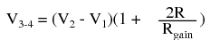
El amplificador diferencial regular en el lado derecho del circuito toma esta caída de voltaje entre los puntos 3 y 4 y la amplifica con una ganancia de 1 (asumiendo nuevamente que todas las resistencias "R" son del mismo valor). Aunque parece una forma engorrosa de construir un amplificador diferencial, tiene las claras ventajas de poseer impedancias de entrada extremadamente altas en el V.1y v2entradas (porque se conectan directamente a las entradas no inversoras de sus respectivos amplificadores operacionales) y ganancia ajustable que se puede configurar mediante una sola resistencia. Manipulando un poco la fórmula anterior, tenemos una expresión general para la ganancia de voltaje general en el amplificador de instrumentación:
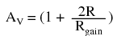
Aunque puede que no sea obvio mirando el esquema, podemos cambiar la ganancia diferencial del amplificador de instrumentación simplemente cambiando el valor de una resistencia: Rganar. Sí, aún podríamos cambiar la ganancia general cambiando los valores de algunas de las otras resistencias, pero esto requeriríaequilibradoEl valor de la resistencia cambia para que el circuito permanezca simétrico. Tenga en cuenta que la ganancia más baja posible con el circuito anterior se obtiene con Rganarcompletamente abierto (resistencia infinita), y ese valor de ganancia es 1.
- REVISAR:
- An amplificador de instrumentaciónes un circuito de amplificador operacional diferencial que proporciona altas impedancias de entrada con facilidad de ajuste de ganancia mediante la variación de una sola resistencia.
Circuitos diferenciadores e integradores
Al introducir reactancia eléctrica en los bucles de retroalimentación de los circuitos amplificadores de amplificador operacional, podemos hacer que la salida responda a cambios en el voltaje de entrada a lo largo detiempo. Tomando sus nombres de sus respectivas funciones de cálculo, losintegradorproduce una salida de voltaje proporcional al producto (multiplicación) del voltaje de entrada y el tiempo; y eldiferenciador(no confundir condiferencial) produce una salida de voltaje proporcional a la tasa de cambio del voltaje de entrada.
La capacitancia se puede definir como la medida de la oposición de un capacitor a los cambios de voltaje. Cuanto mayor es la capacitancia, mayor es la oposición. Los condensadores se oponen al cambio de voltaje creando corriente en el circuito: es decir, se cargan o descargan en respuesta a un cambio en el voltaje aplicado. Entonces, cuanto más capacitancia tenga un capacitor, mayor será su corriente de carga o descarga para cualquier tasa dada de cambio de voltaje a través de él. La ecuación para esto es bastante simple:
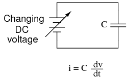
The dv/dtLa fracción es una expresión de cálculo que representa la tasa de cambio de voltaje a lo largo del tiempo. Si el suministro de CC en el circuito anterior aumentara constantemente desde un voltaje de 15 voltios a un voltaje de 16 voltios durante un lapso de 1 hora, lo más probable es que la corriente a través del capacitor fueramuypequeño, debido a la tasa muy baja de cambio de voltaje (dv/dt = 1 voltio/3600 segundos). Sin embargo, si aumentamos constantemente el suministro de CC de 15 voltios a 16 voltios en un lapso de tiempo más corto de 1 segundo, la tasa de cambio de voltaje sería mucho mayor y, por lo tanto, la corriente de carga sería mucho mayor (3600 veces mayor, para ser exactos). La misma cantidad de cambio de voltaje, pero muy diferentetarifasde cambio, lo que resulta en cantidades muy diferentes de corriente en el circuito.
Para poner algunos números definidos a esta fórmula, si el voltaje a través de un capacitor de 47 µF cambiara a una velocidad lineal de 3 voltios por segundo, la corriente "a través" del capacitor sería (47 µF)(3 V/s) = 141 µA.
Podemos construir un circuito de amplificador operacional que mida el cambio de voltaje midiendo la corriente a través de un capacitor y genere un voltaje proporcional a esa corriente:
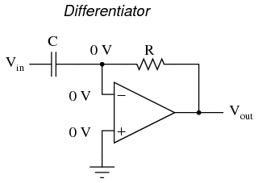
El lado derecho del condensador se mantiene a un voltaje de 0 voltios, debido al efecto de "tierra virtual". Por lo tanto, la corriente "a través" del capacitor se debe únicamente acambiaren el voltaje de entrada. Un voltaje de entrada constante no causará una corriente a través de C, sino unacambioEl voltaje de entrada lo hará.
La corriente del condensador se mueve a través de la resistencia de retroalimentación, produciendo una caída a través de ella, que es la misma que la tensión de salida. Una tasa lineal positiva de cambio de voltaje de entrada dará como resultado un voltaje negativo constante en la salida del amplificador operacional. Por el contrario, una tasa lineal y negativa de cambio de voltaje de entrada dará como resultado un voltaje positivo constante en la salida del amplificador operacional. Esta inversión de polaridad de entrada a salida se debe al hecho de que la señal de entrada se envía (esencialmente) a la entrada inversora del amplificador operacional, por lo que actúa como el amplificador inversor mencionado anteriormente. Cuanto más rápida sea la tasa de cambio de voltaje en la entrada (ya sea positiva o negativa), mayor será el voltaje en la salida.
La fórmula para determinar la salida de voltaje para el diferenciador es la siguiente:
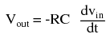
Las aplicaciones para esto, además de representar la función de cálculo derivativo dentro de una computadora analógica, incluyen indicadores de tasa de cambio para instrumentación de procesos. Una de esas aplicaciones de señales de tasa de cambio podría ser para monitorear (o controlar) la tasa de cambio de temperatura en un horno, donde una tasa de aumento de temperatura demasiado alta o demasiado baja podría ser perjudicial. El voltaje de CC producido por el circuito diferenciador podría usarse para accionar un comparador, que señalaría una alarma o activaría un control si la tasa de cambio excediera un nivel preestablecido.
En el control de procesos, la función derivada se utiliza para tomar decisiones de control para mantener un proceso en el punto de ajuste, monitoreando la tasa de cambio del proceso a lo largo del tiempo y tomando medidas para evitar tasas de cambio excesivas, que pueden conducir a una condición inestable. Los controladores electrónicos analógicos utilizan variaciones de este circuito para realizar la función derivativa.
Por otro lado, hay aplicaciones donde necesitamos precisamente la función contraria, llamadaintegraciónen cálculo. Aquí, el circuito del amplificador operacional generaría un voltaje de salida proporcional a la magnitud y duración que una señal de voltaje de entrada se ha desviado de 0 voltios. Dicho de otra manera, una señal de entrada constante generaría una ciertatasa de cambioen la tensión de salida: diferenciación a la inversa. Para ello lo único que tenemos que hacer es intercambiar el condensador y la resistencia del circuito anterior:
Como antes, la retroalimentación negativa del amplificador operacional asegura que la entrada inversora se mantendrá en 0 voltios (la tierra virtual). Si el voltaje de entrada es exactamente 0 voltios, no habrá corriente a través de la resistencia, por lo tanto no se cargará el capacitor y, por lo tanto, el voltaje de salida no cambiará. No podemos garantizar qué voltaje habrá en la salida con respecto a tierra en esta condición, pero podemos decir que el voltaje de salidaserá constante.
Sin embargo, si aplicamos un voltaje positivo constante a la entrada, la salida del amplificador operacional caerá negativa a una velocidad lineal, en un intento de producir el voltaje cambiante a través del capacitor necesario para mantener la corriente establecida por la diferencia de voltaje a través de la resistencia. Por el contrario, un voltaje negativo constante en la entrada da como resultado un voltaje lineal creciente (positivo) en la salida. La tasa de cambio del voltaje de salida será proporcional al valor del voltaje de entrada.
La fórmula para determinar la salida de voltaje del integrador es la siguiente:
Una aplicación para este dispositivo sería mantener un "total acumulado" de exposición o dosis de radiación, si el voltaje de entrada fuera una señal proporcional suministrada por un detector de radiación electrónico. La radiación nuclear puede ser tan dañina en bajas intensidades durante largos períodos de tiempo como en altas intensidades durante períodos cortos de tiempo. Un circuito integrador tomaría en cuenta tanto la intensidad (magnitud del voltaje de entrada) como el tiempo, generando un voltaje de salida que representa la dosis total de radiación.
Otra aplicación sería integrar una señal que represente el flujo de agua, produciendo una señal que represente la cantidad total de agua que ha pasado por el caudalímetro. Esta aplicación de un integrador a veces se denominatotalizadoren el comercio de instrumentación industrial.
- REVISAR:
- A diferenciadorEl circuito produce un voltaje de salida constante para un voltaje de entrada que cambia constantemente.
- An integradorEl circuito produce un voltaje de salida que cambia constantemente para un voltaje de entrada constante.
- Ambos tipos de dispositivos se construyen fácilmente y utilizan componentes reactivos (normalmente condensadores en lugar de inductores) en la parte de retroalimentación del circuito.
Positive feedback
Como hemos visto, la retroalimentación negativa es un principio increíblemente útil cuando se aplica a amplificadores operacionales. Es lo que nos permite crear todos estos circuitos prácticos, pudiendo establecer con precisión ganancias, tasas y otros parámetros importantes con solo unos pocos cambios en los valores de resistencia. La retroalimentación negativa hace que todos estos circuitos sean estables y autocorregibles.
El principio básico de la retroalimentación negativa es que la producción tiende a moverse en una dirección que crea una condición de equilibrio (equilibrio). En un circuito de amplificador operacional sin retroalimentación, no hay ningún mecanismo correctivo y el voltaje de salida se saturará con la más mínima cantidad de voltaje diferencial aplicado entre las entradas. El resultado es un comparador:
Con retroalimentación negativa (el voltaje de salida "realimentado" de alguna manera a la entrada inversora), el circuito tiende a evitar que la salida alcance la saturación total. Más bien, el voltaje de salida es tan alto o tan bajo como sea necesario para equilibrar los voltajes de las dos entradas:
Ya sea que la salida se realimente directamente a la entrada inversora (-) o se acople a través de un conjunto de componentes, el efecto es el mismo: la ganancia de voltaje diferencial extremadamente alta del amplificador operacional será "domesticada" y el circuito responderá de acuerdo con los dictados del "bucle" de retroalimentación que conecta la salida a la entrada inversora.
Otro tipo de retroalimentación, a sabercomentarios positivos, también encuentra aplicación en circuitos de amplificador operacional. A diferencia de la retroalimentación negativa, donde el voltaje de salida se "realimenta" a la entrada inversora (-), con la retroalimentación positiva el voltaje de salida se enruta de alguna manera a la entrada no inversora (+). En su forma más simple, podríamos conectar un trozo de cable recto desde la salida a la entrada no inversora y ver qué sucede:
La entrada inversora permanece desconectada del circuito de retroalimentación y queda libre para recibir una tensión externa. Veamos qué pasa si ponemos a tierra la entrada inversora:
Con la entrada inversora conectada a tierra (mantenida a cero voltios), el voltaje de salida estará dictado por la magnitud y la polaridad del voltaje en la entrada no inversora. Si ese voltaje resulta ser positivo, el amplificador operacional también impulsará su salida de manera positiva, alimentando ese voltaje positivo de regreso a la entrada no inversora, lo que resultará en una saturación de salida positiva total. Por otro lado, si el voltaje en la entrada no inversora comienza siendo negativo, la salida del amplificador operacional se conducirá en la dirección negativa, retroalimentando a la entrada no inversora y dando como resultado una saturación negativa total.
Lo que tenemos aquí es un circuito cuya salida esbiestable: estable en uno de dos estados (saturado positivo o saturado negativo). Una vez que haya alcanzado uno de esos estados saturados, tenderá a permanecer en ese estado, sin cambios. Lo que se necesita para que cambie de estado es un voltaje colocado sobre la entrada inversora (-) de la misma polaridad, pero de una magnitud ligeramente mayor. Por ejemplo, si nuestro circuito está saturado con un voltaje de salida de +12 voltios, se necesitará un voltaje de entrada en la entrada inversora de al menos +12 voltios para que la salida cambie. Cuando cambie, se saturará completamente de negativo.
Por lo tanto, un amplificador operacional con retroalimentación positiva tiende a permanecer en cualquier estado de salida en el que ya se encuentre. Se "engancha" entre uno de dos estados, saturado positivo o saturado negativo. Técnicamente esto se conoce comohistéresis.
La histéresis puede ser una propiedad útil para un circuito comparador. Como hemos visto antes, los comparadores se pueden utilizar para producir una onda cuadrada a partir de cualquier tipo de entrada de forma de onda en rampa (onda sinusoidal, onda triangular, onda en diente de sierra, etc.). Si la forma de onda de CA entrante está libre de ruido (es decir, una forma de onda "pura"), un comparador simple funcionará bien.
Sin embargo, si existe alguna anomalía en la forma de onda, como armónicos o "picos", que hacen que el voltaje suba y baje significativamente dentro del lapso de tiempo de un solo ciclo, la salida de un comparador podría cambiar de estado inesperadamente:
Cada vez que hay una transición a través del nivel de voltaje de referencia, no importa cuán pequeña sea esa transición, la salida del comparador cambiará de estado, produciendo una onda cuadrada con "fallos".
Si agregamos un poco de retroalimentación positiva al circuito comparador, introduciremos histéresis en la salida. Esta histéresis hará que la salida permanezca en su estado actual a menos que el voltaje de entrada de CA sufra unimportantecambio de magnitud.
Lo que crea esta resistencia de retroalimentación es una referencia dual para el circuito comparador. El voltaje aplicado a la entrada no inversora (+) como referencia para comparar con el voltaje de CA entrante cambia según el valor del voltaje de salida del amplificador operacional. Cuando la salida del amplificador operacional está saturada positivamente, el voltaje de referencia en la entrada no inversora será más positivo que antes. Por el contrario, cuando la salida del amplificador operacional está saturada negativamente, el voltaje de referencia en la entrada no inversora será más negativo que antes. El resultado es más fácil de entender en un gráfico:
Cuando la salida del amplificador operacional está saturada positivamente, el voltaje de referencia superior está vigente y la salida no caerá a un nivel de saturación negativo a menos que la entrada de CA aumente.arribaese nivel de referencia superior. Por el contrario, cuando la salida del amplificador operacional está saturada negativamente, el voltaje de referencia más bajo está vigente y la salida no aumentará a un nivel de saturación positiva a menos que la entrada de CA caiga.abajoese nivel de referencia inferior. El resultado es nuevamente una salida limpia de onda cuadrada, a pesar de cantidades significativas de distorsión en la señal de entrada de CA. Para que un "fallo" haga que el comparador cambie de un estado a otro, tendría que ser al menos tan grande (alto) como la diferencia entre los niveles de voltaje de referencia superior e inferior, y en el momento correcto para cruzar ambos niveles.
Otra aplicación de la retroalimentación positiva en los circuitos de amplificadores operacionales es la construcción de circuitos osciladores. Unosciladores un dispositivo que produce un voltaje de salida alterno (CA), o al menos pulsante. Técnicamente se le conoce comoastabledispositivo: sin estado de salida estable (sin equilibrio alguno). Los osciladores son dispositivos muy útiles y se fabrican fácilmente con solo un amplificador operacional y algunos componentes externos.
Cuando la salida está saturada positiva, la Vrefserá positivo y el condensador se cargará en dirección positiva. cuando vrampaexcede Vrefpor el margen más pequeño, la salida se saturará negativamente y el condensador se cargará en la dirección opuesta (polaridad). La oscilación se produce porque la retroalimentación positiva es instantánea y la retroalimentación negativa se retrasa (mediante una constante de tiempo RC). La frecuencia de este oscilador se puede ajustar variando el tamaño de cualquier componente.
- REVISAR:
- La retroalimentación negativa crea una condición deequilibrio(balance). La retroalimentación positiva crea una condición dehistéresis(la tendencia a "prenderse" en uno de dos estados extremos).
- An osciladores un dispositivo que produce un voltaje de salida alterno o pulsante.
Consideraciones prácticas
El funcionamiento real tiene algunas imperfecciones en comparación con un modelo “ideal”. Un dispositivo real se diferencia de un amplificador diferencial perfecto. Uno menos uno puede no ser cero. Es posible que tenga una compensación como un medidor analógico que no está puesto a cero. Las entradas pueden consumir corriente. Las características pueden variar con la edad y la temperatura. La ganancia puede reducirse en frecuencias altas y la fase puede cambiar de entrada a salida. Estas imperfecciones pueden causar errores no perceptibles en algunas aplicaciones y errores inaceptables en otras. En algunos casos, estos errores pueden compensarse. A veces se requiere un dispositivo de mayor calidad y mayor costo.
Ganancia de modo común
Como se dijo antes, un amplificador diferencial ideal solo amplifica el voltajediferenciaentre sus dos entradas. Si las dos entradas de un amplificador diferencial se pusieran en cortocircuito (asegurando así una diferencia de potencial cero entre ellas), no debería haber ningún cambio en el voltaje de salida para cualquier cantidad de voltaje aplicado entre esas dos entradas en cortocircuito y tierra:
Voltaje que es común entre cualquiera de las entradas y tierra, como "Vmodo común" es en este caso, se llamavoltaje de modo común. A medida que variamos este voltaje común, el voltaje de salida del amplificador diferencial perfecto debe mantenerse absolutamente estable (sin cambios en la salida por ningún cambio arbitrario en la entrada en modo común). Esto se traduce en unganancia de voltaje en modo comúnde cero.
El amplificador operacional, al ser un amplificador diferencial con alta ganancia diferencial, idealmente también tendría ganancia en modo común cero. Sin embargo, en la vida real esto no es fácil de lograr. Por lo tanto, los voltajes de modo común siempre tendrán algún efecto en el voltaje de salida del amplificador operacional.
El rendimiento de un amplificador operacional real a este respecto se mide más comúnmente en términos de su ganancia de voltaje diferencial (cuánto amplifica la diferencia entre dos voltajes de entrada) versus su ganancia de voltaje de modo común (cuánto amplifica un voltaje de modo común). La relación entre el primero y el segundo se llamarelación de rechazo de modo común, abreviado como CMRR:
Un amplificador operacional ideal, con ganancia de modo común cero, tendría un CMRR infinito. Los amplificadores operacionales reales tienen CMRR altos, el omnipresente 741 tiene alrededor de 70 dB, lo que equivale a un poco más de 3000 en términos de proporción.
Debido a que la relación de rechazo del modo común en un amplificador operacional típico es tan alta, la ganancia del modo común generalmente no es una gran preocupación en circuitos donde el amplificador operacional se usa con retroalimentación negativa. Si el voltaje de entrada en modo común de un circuito amplificador cambiara repentinamente, produciendo así un cambio correspondiente en la salida debido a la ganancia en modo común, ese cambio en la salida se corregiría rápidamente como retroalimentación negativa y ganancia diferencial (siendomuchomayor que la ganancia del modo común) trabajó para devolver el sistema al equilibrio. Efectivamente, se podría ver un cambio en la salida, pero sería mucho menor de lo que cabría esperar.
Sin embargo, una consideración a tener en cuenta es la ganancia de modo común en circuitos de amplificador operacional diferenciales, como los amplificadores de instrumentación. Fuera del paquete sellado del amplificador operacional y de la ganancia diferencial extremadamente alta, podemos encontrar una ganancia en modo común introducida por un desequilibrio de los valores de resistencia. Para demostrar esto, ejecutaremos un análisis SPICE en un amplificador de instrumentación con entradas en cortocircuito (sin voltaje diferencial), imponiendo un voltaje de modo común para ver qué sucede. Primero, ejecutaremos el análisis que muestra el voltaje de salida de un circuito perfectamente equilibrado. No deberíamos esperar ver ningún cambio en el voltaje de salida a medida que cambia el voltaje de modo común:
instrumentation amplifier v1 1 0 rin1 1 0 9e12 rjump 1 4 1e-12 rin2 4 0 9e12 e1 3 0 1 2 999k e2 6 0 4 5 999k e3 9 0 8 7 999k rload 9 0 10k r1 2 3 10k rgain 2 5 10k r2 5 6 10k r3 3 7 10k r4 7 9 10k r5 6 8 10k r6 8 0 10k .dc v1 0 10 1 .print dc v(9) .end
v1 v(9) 0.000E+00 0.000E+00 1.000E+00 1.355E-16 2.000E+00 2.710E-16 3.000E+00 0.000E+00 As you can see, the output voltage v(9) 4.000E+00 5.421E-16 hardly changes at all for a common-mode 5.000E+00 0.000E+00 input voltage (v1) that sweeps from 0 6.000E+00 0.000E+00 to 10 volts. 7.000E+00 0.000E+00 8.000E+00 1.084E-15 9.000E+00 -1.084E-15 1.000E+01 0.000E+00
Aparte de desviaciones muy pequeñas (en realidad debido a peculiaridades de SPICE más que al comportamiento real del circuito), la salida permanece estable donde debería estar: a 0 voltios, con diferencial de voltaje de entrada cero. Sin embargo, introduzcamos un desequilibrio de resistencia en el circuito, aumentando el valor de R5de 10.000 Ω a 10.500 Ω, y vea qué sucede (la lista de redes se ha omitido por brevedad; lo único modificado es el valor de R5):
v1 v(9) 0.000E+00 0.000E+00 1.000E+00 -2.439E-02 2.000E+00 -4.878E-02 3.000E+00 -7.317E-02 This time we see a significant variation 4.000E+00 -9.756E-02 (from 0 to 0.2439 volts) in output voltage 5.000E+00 -1.220E-01 as the common-mode input voltage sweeps 6.000E+00 -1.463E-01 from 0 to 10 volts as it did before. 7.000E+00 -1.707E-01 8.000E+00 -1.951E-01 9.000E+00 -2.195E-01 1.000E+01 -2.439E-01
Nuestro diferencial de voltaje de entrada sigue siendo cero voltios, pero el voltaje de salida cambia significativamente a medida que cambia el voltaje de modo común. Esto es indicativo de una ganancia en modo común, algo que intentamos evitar. Más que eso, es una ganancia de modo común creada por nosotros mismos, que no tiene nada que ver con imperfecciones en los propios amplificadores operacionales. Con una ganancia diferencial muy moderada (en realidad igual a 3 en este circuito en particular) y sin retroalimentación negativa fuera del circuito, esta ganancia de modo común no se controlará en una aplicación de señal de instrumento.
Sólo hay una forma de corregir esta ganancia de modo común y es equilibrar todos los valores de resistencia. Al diseñar un amplificador de instrumentación a partir de componentes discretos (en lugar de comprar uno en un paquete integrado), es aconsejable proporcionar algunos medios para realizar ajustes precisos en al menos una de las cuatro resistencias conectadas al amplificador operacional final para poder "recortar" cualquier ganancia de modo común. Proporcionar los medios para "recortar" la red de resistencias también tiene beneficios adicionales. Supongamos que todos los valores de resistencia son exactamente como deberían ser, pero existe una ganancia de modo común debido a una imperfección en uno de los amplificadores operacionales. Con la disposición de ajuste, la resistencia podría recortarse para compensar esta ganancia no deseada.
Una peculiaridad de algunos modelos de amplificadores operacionales es la de la salida.engancharse, generalmente causado porque el voltaje de entrada de modo común excede los límites permitidos. Si el voltaje del modo común cae fuera de los límites especificados por el fabricante, la salida puede "bloquearse" repentinamente en el modo alto (saturarse al voltaje de salida total). En los amplificadores operacionales con entrada JFET, puede ocurrir un enganche si el voltaje de entrada de modo común se acerca demasiado al voltaje negativo del riel de suministro de energía. En el amplificador operacional TL082, por ejemplo, esto ocurre cuando el voltaje de entrada de modo común se encuentra dentro de aproximadamente 0,7 voltios del voltaje negativo del riel de suministro de energía. Esta situación puede ocurrir fácilmente en un circuito de suministro único, donde el riel de suministro de energía negativo está a tierra (0 voltios) y la señal de entrada puede oscilar libremente a 0 voltios.
El enganche también puede ser activado por el voltaje de entrada de modo comúnexcesivoTensiones del carril de alimentación, negativas o positivas. Como regla general, nunca debe permitir que el voltaje de entrada aumente por encima del voltaje positivo del riel de suministro de energía o que caiga por debajo del voltaje negativo del riel de suministro de energía, incluso si el amplificador operacional en cuestión está protegido contra el enganche (como lo están los modelos de amplificador operacional 741 y 1458). Como mínimo, el comportamiento del amplificador operacional puede volverse impredecible. En el peor de los casos, el tipo de bloqueo provocado por voltajes de entrada que exceden los voltajes de la fuente de alimentación puede ser destructivo para el amplificador operacional.
Si bien este problema puede parecer fácil de evitar, su posibilidad es más probable de lo que piensa. Considere el caso de un circuito amplificador operacional durante el encendido. Si el circuito recibe voltaje de señal de entrada completoantesSi su propia fuente de alimentación ha tenido tiempo suficiente para cargar los condensadores del filtro, la tensión de entrada en modo común puede exceder fácilmente las tensiones del riel de la fuente de alimentación durante un breve periodo de tiempo. Si el amplificador operacional recibe voltaje de señal de un circuito suministrado por una fuente de energía diferente y su propia fuente de energía falla, los voltajes de la señal pueden exceder los voltajes del riel de suministro de energía por un período de tiempo indefinido.
Tensión de offset
Otra preocupación práctica para el rendimiento del amplificador operacional escompensación de voltaje. Es decir, el efecto de tener un voltaje de salida distinto de cero voltios cuando los dos terminales de entrada están en cortocircuito. Recuerde que los amplificadores operacionales son ante todo amplificadores diferenciales: se supone que amplifican la diferencia de voltaje entre las dos conexiones de entrada y nada más. Cuando esa diferencia de voltaje de entrada es exactamente cero voltios, (idealmente) esperaríamos tener exactamente cero voltios presentes en la salida. Sin embargo, en el mundo real esto rara vez sucede. Incluso si el amplificador operacional en cuestión tiene ganancia de modo común cero (CMRR infinito), es posible que el voltaje de salida no sea cero cuando ambas entradas están en cortocircuito. Esta desviación de cero se llamacompensar.
Un amplificador operacional perfecto produciría exactamente cero voltios con ambas entradas en cortocircuito y conectadas a tierra. Sin embargo, la mayoría de los amplificadores operacionales disponibles en el mercado llevarán sus salidas a un nivel saturado, ya sea negativo o positivo. En el ejemplo mostrado arriba, el voltaje de salida está saturado en un valor positivo de 14,7 voltios, apenas un poco menos de +V (+15 voltios) debido al límite de saturación positiva de este amplificador operacional en particular. Debido a que la compensación en este amplificador operacional está llevando la salida a un punto completamente saturado, no hay forma de saber cuánta compensación de voltaje está presente en la salida. Si la fuente de alimentación dividida +V/-V fuera de un voltaje lo suficientemente alto, quién sabe, ¡tal vez la salida sería de varios cientos de voltios de una forma u otra debido a los efectos de la compensación!
Por esta razón, el voltaje de compensación generalmente se expresa en términos de la cantidad equivalente deaportediferencial de voltaje que produce este efecto. En otras palabras, imaginamos que el amplificador operacional es perfecto (sin compensación alguna) y se aplica un pequeño voltaje en serie con una de las entradas para forzar el voltaje de salida en un sentido u otro lejos de cero. Dado que las ganancias diferenciales del amplificador operacional son tan altas, la cifra de "voltaje de compensación de entrada" no tiene por qué ser mucha para tener en cuenta lo que vemos con las entradas en cortocircuito:
El voltaje de compensación tenderá a introducir ligeros errores en cualquier circuito de amplificador operacional. Entonces, ¿cómo lo compensamos? A diferencia de la ganancia de modo común, el fabricante generalmente toma medidas para recortar el desplazamiento de un amplificador operacional empaquetado. Por lo general, se reservan dos terminales adicionales en el paquete del amplificador operacional para conectar un potenciómetro de "recorte" externo. Estos puntos de conexión están etiquetadoscompensación nulay se utilizan de esta manera general:
En amplificadores operacionales individuales como el 741 y el 3130, los puntos de conexión nulos desplazados son los pines 1 y 5 en el paquete DIP de 8 pines. Otros modelos de amplificador operacional pueden tener conexiones nulas desplazadas ubicadas en pines diferentes y/o requerir una configuración ligeramente diferente de la conexión del potenciómetro de ajuste. ¡Algunos amplificadores operacionales no proporcionan ningún pin nulo desplazado! Consulte las especificaciones del fabricante para más detalles.
Corriente de polarización
Las entradas de un amplificador operacional tienen impedancias de entrada extremadamente altas. Es decir, las corrientes de entrada que entran o salen de las dos conexiones de señal de entrada de un amplificador operacional son extremadamente pequeñas. Para la mayoría de los propósitos del análisis de circuitos de amplificadores operacionales, los tratamos como si no existieran en absoluto. Analizamos el circuito como si no hubiera absolutamente ninguna corriente entrando o saliendo de las conexiones de entrada.
Esta imagen idílica, sin embargo, no es del todo cierta. Los amplificadores operacionales, especialmente aquellos con entradas de transistores bipolares, deben tener cierta cantidad de corriente a través de sus conexiones de entrada para que sus circuitos internos estén polarizados adecuadamente. Estas corrientes, lógicamente, se denominancorrientes de polarización. Bajo ciertas condiciones, las corrientes de polarización del amplificador operacional pueden ser problemáticas. El siguiente circuito ilustra una de esas condiciones problemáticas:
A primera vista, no vemos problemas aparentes con este circuito. Un termopar, que genera un pequeño voltaje proporcional a la temperatura (en realidad, un voltaje proporcional a ladiferenciaen temperatura entre la unión de medición y la unión de "referencia" formada cuando los cables del termopar de aleación se conectan con los cables de cobre que conducen al amplificador operacional) impulsa el amplificador operacional ya sea positivo o negativo. En otras palabras, este es un tipo de circuito comparador, que compara la temperatura entre la unión final del termopar y la unión de referencia (cerca del amplificador operacional). El problema es este: el bucle de cable formado por el termopar no proporciona un camino para ambas corrientes de polarización de entrada, porque ambas corrientes de polarización intentan ir en la misma dirección (ya sea dentro o fuera del amplificador operacional).
Para que este circuito funcione correctamente, debemos conectar a tierra uno de los cables de entrada, proporcionando así un camino hacia (o desde) tierra para ambas corrientes:
¡No es necesariamente un problema obvio, pero sí muy real!
Otra forma en que las corrientes de polarización de entrada pueden causar problemas es reduciendo voltajes no deseados a través de las resistencias del circuito. Tomemos este circuito por ejemplo:
Esperamos que un circuito seguidor de voltaje como el anterior reproduzca el voltaje de entrada con precisión en la salida. Pero ¿qué pasa con la resistencia en serie con la fuente de voltaje de entrada? Si hay alguna corriente de polarización a través de la entrada no inversora (+), caerá algo de voltaje en Rin, haciendo así que el voltaje en la entrada no inversora sea diferente al V realinvalor. Las corrientes de polarización suelen estar en el rango de microamperios, por lo que la caída de voltaje en Rinno será mucho, a menos que Rines muy grande. Un ejemplo de una aplicación donde la resistencia de entrada (Rin) queríaser muy grande es el de los electrodos de sonda de pH, donde un electrodo contiene una barrera de vidrio permeable a los iones (un conductor muy pobre, con millones de Ω de resistencia).
Si realmente estuviéramos construyendo un circuito de amplificador operacional para medir el voltaje del electrodo de pH, probablemente querríamos usar un amplificador operacional de entrada FET o MOSFET (IGFET) en lugar de uno construido con transistores bipolares (para menos corriente de polarización de entrada). Pero incluso entonces, las ligeras corrientes de polarización que puedan quedar pueden causar errores de medición, por lo que tenemos que encontrar alguna manera de mitigarlos mediante un buen diseño.
Una forma de hacerlo se basa en el supuesto de que las dos corrientes de polarización de entrada serán las mismas. En realidad, a menudo están cerca de ser lo mismo; la diferencia entre ellos se conoce comocorriente de compensación de entrada. Si son iguales, entonces deberíamos poder cancelar los efectos de la caída de voltaje de la resistencia de entrada insertando una cantidad igual de resistencia en serie con la otra entrada, así:
Con la resistencia adicional agregada al circuito, el voltaje de salida estará más cerca de Vinque antes, incluso si hay cierta compensación entre las dos corrientes de entrada.
Tanto para circuitos amplificadores inversores como no inversores, la resistencia de compensación de corriente de polarización se coloca en serie con la entrada no inversora (+) para compensar las caídas de voltaje de corriente de polarización en la red divisoria:
En cualquier caso, el valor de la resistencia de compensación se determina calculando el valor de resistencia en paralelo de R1y r2. ¿Por qué el valor es igual alparaleloequivalente de R1y r2? Cuando utilizamos el teorema de superposición para calcular cuánta caída de voltaje se producirá por la corriente de polarización de la entrada inversora (-), tratamos la corriente de polarización como si viniera de una fuente de corriente dentro del amplificador operacional y cortocircuitamos todas las fuentes de voltaje (V).iny vout). Esto proporciona dos caminos paralelos para la corriente de polarización (a través de R1y a través de R2, ambos a tierra). Queremos duplicar el efecto de la corriente de polarización en la entrada no inversora (+), por lo que el valor de resistencia que elegimos insertar en serie con esa entrada debe ser igual a R.1en paralelo con R2.
Un problema relacionado, que ocasionalmente experimentan los estudiantes que recién están aprendiendo a construir circuitos amplificadores operacionales, es causado por la falta de una conexión a tierra común a la fuente de alimentación. EsimperativoPara que el amplificador operacional funcione correctamente, algún terminal de la fuente de alimentación de CC sea común a la conexión de "tierra" de las señales de entrada. Esto proporciona una ruta completa para las corrientes de polarización, las corrientes de retroalimentación y la corriente de carga (salida). Tome esta ilustración de circuito, por ejemplo, que muestra una fuente de alimentación correctamente conectada a tierra:
Aquí, las flechas indican la ruta del flujo de electrones a través de las baterías de la fuente de alimentación, tanto para alimentar los circuitos internos del amplificador operacional (el "potenciómetro" dentro del mismo que controla el voltaje de salida) como para alimentar el circuito de retroalimentación de las resistencias R.1y r2. Sin embargo, supongamos que se quitara la conexión a tierra de esta fuente de alimentación de CC "dividida". El efecto de hacer esto es profundo:
Ningún electrón puede entrar o salir del terminal de salida del amplificador operacional, porque el camino hacia la fuente de alimentación es un "callejón sin salida". Por lo tanto, no fluyen electrones a través de la conexión a tierra a la izquierda de R.1, ni a través del circuito de retroalimentación. Esto efectivamente inutiliza el amplificador operacional: no puede sostener corriente a través del circuito de retroalimentación ni a través de una carga conectada a tierra, ya que no hay conexión desde ningún punto de la fuente de alimentación a tierra.
Las corrientes de polarización también se detienen porque dependen de un camino hacia la fuente de alimentación y de regreso a la fuente de entrada a través de tierra. El siguiente diagrama muestra las corrientes de polarización (únicamente), a medida que pasan por los terminales de entrada del amplificador operacional, por los terminales de base de los transistores de entrada y, finalmente, por los terminales de la fuente de alimentación y de regreso a tierra.
Sin una referencia a tierra en la fuente de alimentación, las corrientes de polarización no tendrán una ruta completa para un circuito y se detendrán. Dado que los transistores de unión bipolar son dispositivos controlados por corriente, esto también inutiliza la etapa de entrada del amplificador operacional, ya que ambos transistores de entrada se verán obligados a cortarse por la falta total de corriente de base.
- REVISAR:
- Las entradas del amplificador operacional generalmente conducen corrientes muy pequeñas, llamadascorrientes de polarización, necesario para polarizar adecuadamente la primera etapa del amplificador de transistores interna al circuito de los amplificadores operacionales. Las corrientes de polarización son pequeñas (en el rango de microamperios), pero lo suficientemente grandes como para causar problemas en algunas aplicaciones.
- Corrientes de polarización en ambas entradas.debetener caminos para fluir a cualquiera de los "rieles" de suministro de energía o a tierra. No basta con tener un camino conductor de una entrada a otra.
- Para cancelar cualquier voltaje de compensación causado por la corriente de polarización que fluye a través de las resistencias, simplemente agregue una resistencia equivalente en serie con la otra entrada del amplificador operacional (llamadaresistencia compensadora). Esta medida correctiva se basa en el supuesto de que las dos corrientes de polarización de entrada serán iguales.
- Cualquier desigualdad entre las corrientes de polarización en un amplificador operacional constituye lo que se llama uncorriente de compensación de entrada.
- Es esencial para el funcionamiento adecuado del amplificador operacional que haya una referencia a tierra en algún terminal de la fuente de alimentación, para formar rutas completas para las corrientes de polarización, las corrientes de retroalimentación y la corriente de carga.
Drift
Al ser dispositivos semiconductores, los amplificadores operacionales están sujetos a ligeros cambios de comportamiento con los cambios en la temperatura de funcionamiento. Cualquier cambio en el rendimiento del amplificador operacional con la temperatura se incluye en la categoría de amplificador operacional.deriva. Los parámetros de deriva se pueden especificar para corrientes de polarización, voltaje de compensación y similares. Consulte la hoja de datos del fabricante para obtener detalles sobre cualquier amplificador operacional en particular.
Para minimizar la deriva del amplificador operacional, podemos seleccionar un amplificador operacional hecho para tener una deriva mínima y/o podemos hacer todo lo posible para mantener la temperatura de funcionamiento lo más estable posible. La última acción puede implicar proporcionar algún tipo de control de temperatura para el interior del equipo que alberga los amplificadores operacionales. Esto no es tan extraño como podría parecer a primera vista. Por ejemplo, a veces se sabe que los generadores de referencia de voltaje de precisión estándar de laboratorio emplean "hornos" para mantener sus componentes sensibles (como los diodos Zener) a temperaturas constantes. Si se desea una precisión extremadamente alta por encima de los factores habituales de costo y flexibilidad, esta puede ser una opción que valga la pena considerar.
- REVISAR:
- Los amplificadores operacionales, al ser dispositivos semiconductores, son susceptibles a variaciones de temperatura. Cualquier variación en el rendimiento del amplificador resultante de cambios de temperatura se conoce comoderiva. La deriva se minimiza mejor con el control de la temperatura ambiental.
Frequency response
Con sus ganancias de voltaje diferencial increíblemente altas, los amplificadores operacionales son los principales candidatos para un fenómeno conocido comooscilación de retroalimentación. Probablemente haya escuchado el efecto de audio equivalente cuando el volumen (ganancia) de un megafonía u otro sistema amplificador de micrófono se sube demasiado: ese chillido agudo que resulta de la forma de onda del sonido que se "realimenta" a través del micrófono para ser amplificado nuevamente. Un circuito de amplificador operacional puede manifestar este mismo efecto, y la retroalimentación se produce de forma eléctrica en lugar de audible.
Un ejemplo de esto se ve en el amplificador operacional 3130, si está conectado como un seguidor de voltaje con el mínimo de conexiones de cableado (las dos entradas, salida y las conexiones de fuente de alimentación). La salida de este amplificador operacional oscilará automáticamente debido a su alta ganancia, sin importar el voltaje de entrada. Para combatir esto, una pequeñacondensador de compensacióndebe conectarse a dos terminales especialmente proporcionados en el amplificador operacional. El condensador proporciona una ruta de alta impedancia para que se produzca retroalimentación negativa dentro del circuito del amplificador operacional, disminuyendo así la ganancia de CA e inhibiendo oscilaciones no deseadas. Si el amplificador operacional se utiliza para amplificar señales de alta frecuencia, es posible que este condensador de compensación no sea necesario, pero es absolutamente esencial para el funcionamiento de señales de CC o CA de baja frecuencia.
Algunos amplificadores operacionales, como el modelo 741, tienen un condensador de compensación incorporado para minimizar la necesidad de componentes externos. Esta simplicidad mejorada tiene un costo: debido a la presencia de ese capacitor dentro del amplificador operacional, la retroalimentación negativa tiende a ser más fuerte a medida que aumenta la frecuencia de operación (la reactancia de ese capacitor disminuye con frecuencias más altas). Como resultado, la ganancia de voltaje diferencial del amplificador operacional disminuye a medida que aumenta la frecuencia: se convierte en un amplificador menos efectivo a frecuencias más altas.
Los fabricantes de amplificadores operacionales publicarán las curvas de respuesta de frecuencia de sus productos. Dado que una ganancia diferencial suficientemente alta es absolutamente esencial para una buena operación de retroalimentación en los circuitos de amplificadores operacionales, la respuesta ganancia/frecuencia de un amplificador operacional limita efectivamente su "ancho de banda" de operación. El diseñador del circuito debe tener esto en cuenta si se quiere mantener un buen rendimiento en el rango requerido de frecuencias de señal.
- REVISAR:
- Debido a las capacitancias dentro de los amplificadores operacionales, su ganancia de voltaje diferencial tiende a disminuir a medida que aumenta la frecuencia de entrada. Las curvas de respuesta de frecuencia para amplificadores operacionales están disponibles del fabricante.
Desfase de entrada a salida
Para ilustrar el cambio de fase de la entrada a la salida de un amplificador operacional (op-amp), se probó el OPA227 en nuestro laboratorio. El OPA227 se construyó en una configuración típica no inversora (Figuraa continuación).
{kind=link}
OPA227 Etapa no inversora
La configuración del circuito requiere una ganancia de señal de ≅34 V/V o ≅50 dB. La excitación de entrada en Vsrc se configuró en 10 mVp y tres frecuencias de interés: 2,2 kHz, 22 kHz y 220 MHz.La ganancia de bucle abierto y la curva de fase frente a la frecuencia del OPA227 se muestran en la Figuraa continuación.
{kind=link}
AVy gráfico Φ vs. frecuencia
Para ayudar a predecir el cambio de fase en bucle cerrado de la entrada a la salida, podemos utilizar la ganancia de bucle abierto y la curva de fase. Dado que la configuración del circuito requiere una ganancia de bucle cerrado, o 1/β, de ≅50 dB, la curva de ganancia de bucle cerrado intersecta la curva de ganancia de bucle abierto a aproximadamente 22 kHz. Después de esta intersección, la curva de ganancia de bucle cerrado cae a los típicos 20 dB/década para amplificadores de retroalimentación de voltaje y sigue la curva de ganancia de bucle abierto.
Lo que realmente funciona aquí es que la retroalimentación negativa del circuito cerrado modifica la respuesta del circuito abierto. Cerrar el circuito con retroalimentación negativa establece un polo de circuito cerrado a 22 kHz. Al igual que el polo dominante en la curva de fase de bucle abierto, esperaremos un cambio de fase en la respuesta de bucle cerrado. ¿Cuánto cambio de fase veremos?
Dado que el nuevo polo ahora está a 22 kHz, este también es el punto de -3 dB cuando el polo comienza a salirse del circuito cerrado nuevamente a 20 dB por década como se indicó anteriormente. Como ocurre con cualquier polo en la teoría de control básica, el cambio de fase comienza a ocurrir una década en frecuencia antes que el polo y termina en 90ode cambio de fase una década en frecuencia después del polo. Entonces, ¿qué predice esto para la respuesta de circuito cerrado en nuestro circuito?
Esto predecirá el cambio de fase a partir de 2,2 kHz, con 45ode cambio de fase en el punto -3 dB de 22 kHz, y finalmente terminando con 90ode cambio de fase a 220 kHz. Las tres figuras que se muestran a continuación son capturas de osciloscopio en las frecuencias de interés para nuestro circuito OPA227. Cifraa continuaciónestá configurado en 2,2 kHz y no hay ningún cambio de fase notable.Cifraa continuaciónestá configurado para 220 kHz y ≅45oSe registra el cambio de fase.Finalmente, figuraa continuaciónestá configurado para 220 MHz, y el esperado ≅90oSe registra el cambio de fase. Los gráficos de alcance se capturaron utilizando un LeCroy 44x Wavesurfer. El gráfico de alcance final utilizó una sonda x1 con el disparador configurado en rechazo de HF.
{kind=link}
{kind=link}
{kind=link}
OPA227 Av=50 dB a 2,2 kHz
OPA227 Av=50dB @ 22kHz
OPA227 Av=50dB @ 220kHz
Modelos de amplificadores operacionales
Si bien la mención de amplificadores operacionales suele provocar visiones de dispositivos semiconductores construidos como circuitos integrados en un chip de silicio en miniatura, los primeros amplificadores operacionales fueron en realidad circuitos de tubos de vacío. El primer amplificador operacional comercial de propósito general fue fabricado por George A. Philbrick Researches, Incorporated, en 1952. Designado como K2-W, se construyó alrededor de dos tubos de triodo doble montados en un conjunto con un zócalo octal (8 pines) para una fácil instalación y mantenimiento en chasis de equipos electrónicos de esa época. La asamblea quedó más o menos así:
El diagrama esquemático muestra los dos tubos, junto con diez resistencias y dos condensadores, un diseño de circuito bastante simple incluso para los estándares de 1952:
En caso de que no esté familiarizado con el funcionamiento de los tubos de vacío, funcionan de manera similar a los transistores IGFET de agotamiento de canal N: es decir, conducen más corriente cuando la rejilla de control (la línea discontinua) se vuelve más positiva con respecto al cátodo (la línea doblada cerca de la parte inferior del símbolo del tubo) y conducen menos corriente cuando la rejilla de control se hace menos positiva (o más negativa) que el cátodo. El tubo triodo doble de la izquierda funciona comopar diferencial, convirtiendo las entradas diferenciales (señales de voltaje de entrada inversoras y no inversoras) en una única señal de voltaje amplificada que luego se alimenta a la rejilla de control del triodo izquierdo del segundo par de triodos a través de un divisor de voltaje (1 MΩ - 2,2 MΩ). Ese triodo amplifica e invierte la salida del par diferencial para obtener una ganancia de voltaje mayor, luego la señal amplificada se acopla al segundo triodo del mismo tubo de triodo dual en una configuración de amplificador no inversor para una ganancia de corriente mayor. Los dos "tubos incandescentes" de neón actúan como reguladores de voltaje, de manera similar al comportamiento de los diodos zener semiconductores, para proporcionar un voltaje de polarización en el acoplamiento entre los dos triodos amplificadores de un solo extremo.
Con un voltaje de suministro dual de +300/-300 voltios, este amplificador operacional solo podía oscilar su salida +/- 50 voltios, lo cual es muy pobre para los estándares actuales. Tenía una ganancia de voltaje de bucle abierto de 15.000 a 20.000, una velocidad de respuesta de +/- 12 voltios/μsegundo, una corriente de salida máxima de 1 mA, un consumo de energía en reposo de más de 3 vatios (¡sin incluir la energía para los filamentos de los tubos!), y costaba alrededor de $24 en dólares de 1952. Se podría haber logrado un mejor rendimiento utilizando un diseño de circuito más sofisticado, pero sólo a expensas de un mayor consumo de energía, mayor costo y menor confiabilidad.
Con la llegada de los transistores de estado sólido, se hicieron viables amplificadores operacionales con mucho menos consumo de energía en reposo y mayor confiabilidad, pero muchos de los demás parámetros de rendimiento permanecieron más o menos iguales. Tomemos, por ejemplo, el modelo P55A de Philbrick, un amplificador operacional de estado sólido de uso general de alrededor de 1966. El P55A tenía una ganancia de bucle abierto de 40.000, una velocidad de respuesta de 1,5 voltios/μsegundo y una oscilación de salida de +/- 11 voltios (a un voltaje de fuente de alimentación de +/- 15 voltios), una corriente de salida máxima de 2,2 mA y un costo de $49 (o alrededor de $21 para la versión de "grado de utilidad"). El P55A, así como otros amplificadores operacionales de la línea de Philbrick de la época, tenía una construcción de componentes discretos: sus transistores, resistencias y condensadores constituyentes estaban alojados en un "ladrillo" sólido que se asemejaba a un gran paquete de circuito integrado.
No es muy difícil construir un amplificador operacional tosco utilizando componentes discretos. En la figura se muestra un esquema de uno de esos circuitos.a continuación.
{kind=link}
Un amplificador operacional simple hecho de componentes discretos.
Si bien su rendimiento es bastante deprimente según los estándares modernos, demuestra que no es necesaria la complejidad para crear un amplificador operacional mínimamente funcional. Transistores Q3y q4forman el corazón de otro circuito de par diferencial, el semiconductor equivalente del primer tubo triodo en el esquema K2-W. Como ocurría en el circuito de válvulas de vacío, el propósito de un par diferencial es amplificar y convertir un voltaje diferencial entre los dos terminales de entrada en un voltaje de salida de un solo extremo.
Con la llegada de la tecnología de circuitos integrados (IC), los diseños de amplificadores operacionales experimentaron un aumento espectacular en rendimiento, confiabilidad, densidad y economía. Entre los años 1964 y 1968, la corporación Fairchild introdujo tres modelos de amplificadores operacionales de circuitos integrados: el 702, el 709 y el aún popular 741. Si bien el 741 ahora se considera obsoleto en términos de rendimiento, sigue siendo uno de los favoritos entre los aficionados por su simplicidad y tolerancia a fallas (protección contra cortocircuitos en la salida, por ejemplo). La experiencia personal de abusar de muchos amplificadores operacionales 741 me ha llevado a la conclusión de que es un chip difícil de eliminar. . .
El diagrama esquemático interno de un amplificador operacional modelo 741 se muestra en la Figuraa continuación.
{kind=link}
Diagrama esquemático de un amplificador operacional modelo 741.
Según los estándares de los circuitos integrados, el 741 es un dispositivo muy simple: un ejemplo deintegración a pequeña escala, oSSItecnología. No sería un asunto menor construir este circuito utilizando componentes discretos, por lo que se pueden ver las ventajas de incluso la tecnología de circuito integrado más primitiva sobre los componentes discretos donde hay un gran número de piezas involucradas.
Para el aficionado, estudiante o ingeniero que desea un mayor rendimiento, hay literalmente cientos de modelos de amplificadores operacionales para elegir. Muchos se venden por menos de un dólar cada uno, ¡incluso al por menor! La instrumentación de propósito especial y los amplificadores operacionales de radiofrecuencia (RF) pueden ser un poco más caros. En esta sección mostraré varios amplificadores operacionales populares y asequibles, comparando y contrastando sus especificaciones de rendimiento. El venerable 741 se incluye como "referencia" a modo de comparación, aunque, como dije antes, se considera un diseño obsoleto.
Widely used operational amplifiers
| Modelo | Dispositivos/paquete | Fuente de alimentación | Ancho de banda | Corriente de polarización | velocidad de giro | Corriente de salida |
|---|---|---|---|---|---|---|
| número | (contar) | (V) | (Megahercio) | (n / A) | (V/μS) | (mamá) |
| TL082 | 2 | 12 / 36 | 4 | 8 | 13 | 17 |
| LM301A | 1 | 10 / 36 | 1 | 250 | 0.5 | 25 |
| LM318 | 1 | 10 / 40 | 15 | 500 | 70 | 20 |
| LM324 | 4 | 3 / 32 | 1 | 45 | 0.25 | 20 |
| LF353 | 2 | 12 / 36 | 4 | 8 | 13 | 20 |
| LF356 | 1 | 10 / 36 | 5 | 8 | 12 | 25 |
| LF411 | 1 | 10 / 36 | 4 | 20 | 15 | 25 |
| 741C | 1 | 10 / 36 | 1 | 500 | 0.5 | 25 |
| LM833 | 2 | 10 / 36 | 15 | 1050 | 7 | 40 |
| LM1458 | 2 | 6 / 36 | 1 | 800 | 10 | 45 |
| CA3130 | 1 | 5 / 16 | 15 | 0.05 | 10 | 20 |
Listado en la tablaanteriorson sólo algunos de los modelos de amplificadores operacionales de bajo costo ampliamente disponibles en los proveedores de productos electrónicos. La mayoría de ellos están disponibles en tiendas minoristas de suministros como Radio Shack. Todos cuestan menos de $1,00 directamente del fabricante (precios del año 2001). Como puede ver, existe una variación sustancial en el rendimiento entre algunas de estas unidades. Tomemos, por ejemplo, el parámetro de corriente de polarización de entrada: el CA3130 gana el premio por el más bajo, con 0,05 nA (o 50 pA), y el LM833 tiene el más alto con un poco más de 1 µA. El modelo CA3130 logra su corriente de polarización increíblemente baja mediante el uso de transistores MOSFET en su etapa de entrada. Un fabricante anuncia la impedancia de entrada del 3130 como 1,5 tera-ohmios o 1,5 x 1012¡Oh! Otros amplificadores operacionales que se muestran aquí con cifras de corriente de polarización baja usan transistores de entrada JFET, mientras que los modelos de corriente de polarización alta usan transistores de entrada bipolares.
Si bien el 741 se especifica en muchos esquemas de proyectos electrónicos y se muestra en muchos libros de texto, su rendimiento ha sido superado durante mucho tiempo por otros diseños en todos los aspectos. Incluso algunos diseños originalmente basados en el 741 se han mejorado a lo largo de los años hasta superar con creces las especificaciones de diseño originales. Un ejemplo de ello es el modelo 1458, dos amplificadores operacionales en un paquete DIP de 8 pines, que en un momento tuvo exactamente las mismas especificaciones de rendimiento que el 741. En su última encarnación, cuenta con un rango de voltaje de fuente de alimentación más amplio, una velocidad de respuesta 50 veces mayor y casi el doble de la capacidad de corriente de salida de un 741, al tiempo que conserva la característica de protección contra cortocircuitos de salida del 741. Amplificadores operacionales con JFET y Transistores de entrada MOSFETfarsuperan el rendimiento del 741 en términos de corriente de polarización y, en general, también logran superar al 741 en términos de ancho de banda y velocidad de respuesta.
Mis recomendaciones personales para los amplificadores operacionales son las siguientes: cuando la corriente de polarización baja es una prioridad (como en los circuitos integradores de baja velocidad), elija el 3130. Para trabajos de amplificador de CC de uso general, el 1458 ofrece un buen rendimiento (y obtiene dos amplificadores operacionales en el espacio de un paquete). Para mejorar el rendimiento, elija el modelo 353, ya que es un reemplazo compatible con pines para el 1458. El 353 está diseñado con circuitos de entrada JFET para una corriente de polarización muy baja y tiene un ancho de banda 4 veces mayor que el 1458, aunque su límite de corriente de salida es más bajo (pero aún está protegido contra cortocircuitos). Puede que sea más difícil encontrarlo en el estante de su tienda local de suministros electrónicos, pero tiene un precio tan razonable como el 1458.
Si se requiere un voltaje de suministro de energía bajo, recomiendo el modelo 324, ya que funciona con tan solo 3 voltios CC. Sus requisitos de corriente de polarización de entrada también son bajos y proporciona cuatro amplificadores operacionales en un solo chip de 14 pines. Su principal debilidad es la velocidad, limitada a un ancho de banda de 1 MHz y una velocidad de salida de sólo 0,25 voltios por µs. Para circuitos amplificadores de CA de alta frecuencia, el 318 es un muy buen modelo de "propósito general".
Hay amplificadores operacionales de propósito especial disponibles a un costo modesto que brindan mejores especificaciones de rendimiento. Muchos de ellos están diseñados para un tipo específico de ventaja de rendimiento, como un ancho de banda máximo o una corriente de polarización mínima. Tomemos, por ejemplo, los amplificadores operacionales, ambos diseñados para un gran ancho de banda en la Tablaa continuación.
High bandwidth operational amplifiers
| Modelo | Dispositivos/paquete | Fuente de alimentación | Ancho de banda | Corriente de polarización | velocidad de giro | Corriente de salida |
|---|---|---|---|---|---|---|
| número | (contar) | (V) | (Megahercio) | (n / A) | (V/μS) | (mamá) |
| CLC404 | 1 | 10 / 14 | 232 | 44,000 | 2600 | 70 |
| CLC425 | 1 | 5 / 14 | 1900 | 40,000 | 350 | 90 |
El CLC404 tiene un precio de 21,80 dólares (casi tanto como el primer amplificador operacional comercial de George Philbrick, aunque sin corrección por inflación), mientras que el CLC425 es bastante menos costoso, 3,23 dólares por unidad. En ambos casos, se logra una alta velocidad a expensas de altas corrientes de polarización y rangos de voltaje de suministro de energía restrictivos. Algunos amplificadores operacionales, diseñados para una salida de alta potencia, se enumeran en la tablaa continuación.
High current operational amplifiers
| Modelo | Dispositivos/paquete | Fuente de alimentación | Ancho de banda | Corriente de polarización | velocidad de giro | Corriente de salida |
|---|---|---|---|---|---|---|
| número | (contar) | (V) | (Megahercio) | (n / A) | (V/μS) | (mamá) |
| LM12CL | 1 | 15 / 80 | 0.7 | 1000 | 9 | 13,000 |
| LM7171 | 1 | 5.5 / 36 | 200 | 12,000 | 4100 | 100 |
Sí, el LM12CL en realidad tiene una clasificación de corriente de salida de13 amps(13.000 miliamperios)! Su precio es de $14.40, lo cual no es mucho dinero, considerando la potencia bruta del dispositivo. El LM7171, por otro lado, intercambia una alta capacidad de salida de corriente por una capacidad de salida de voltaje rápida (una alta velocidad de respuesta). Su precio es de 1,19 dólares, casi tan bajo como algunos amplificadores operacionales de "propósito general".
Los paquetes de amplificadores también se pueden comprar como circuitos de aplicación completos en lugar de amplificadores operacionales simples. Las corporaciones Burr-Brown y Analog Devices, por ejemplo, ambas conocidas desde hace mucho tiempo por sus líneas de productos de amplificadores de precisión, ofrecen amplificadores de instrumentación en paquetes prediseñados, así como otros dispositivos amplificadores especializados. En diseños donde la alta precisión y repetibilidad después de la reparación son importantes, podría ser ventajoso para el diseñador del circuito elegir un "bloque" de amplificador prediseñado en lugar de construir el circuito a partir de amplificadores operacionales individuales. Por supuesto, estas unidades suelen costar bastante más que los amplificadores operacionales individuales.
Datos
Datos paramétricos para todos los modelos de amplificadores operacionales de semiconductores.exceptoel CA3130 proviene de los recursos en línea de National Semiconductor, disponibles en este sitio web:[*]. Los datos para el CA3130 provienen de la hoja de datos CA3130/CA3130A de Harris Semiconductor (número de archivo 817.4).
Colaboradores
Los contribuyentes a este capítulo se enumeran en orden cronológico de sus contribuciones, desde el más reciente hasta el primero. Consulte el Apéndice 2 (Lista de colaboradores) para fechas e información de contacto.
Wayne pequeño(Junio de 2007): Autor, subsección “Desplazamiento de fase de entrada a salida”, en la sección “Consideraciones prácticas”.
Lecciones en circuitos eléctricoscopyright (C) 2000-2023 Tony R. Kuphaldt, según los términos y condiciones delCC BY License.